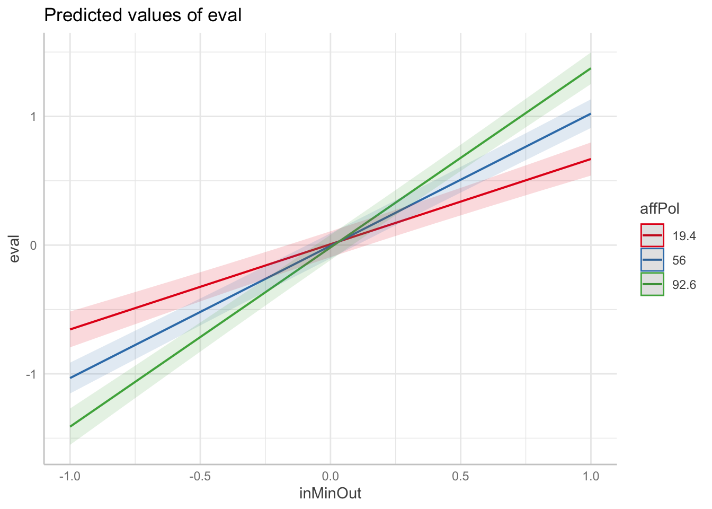
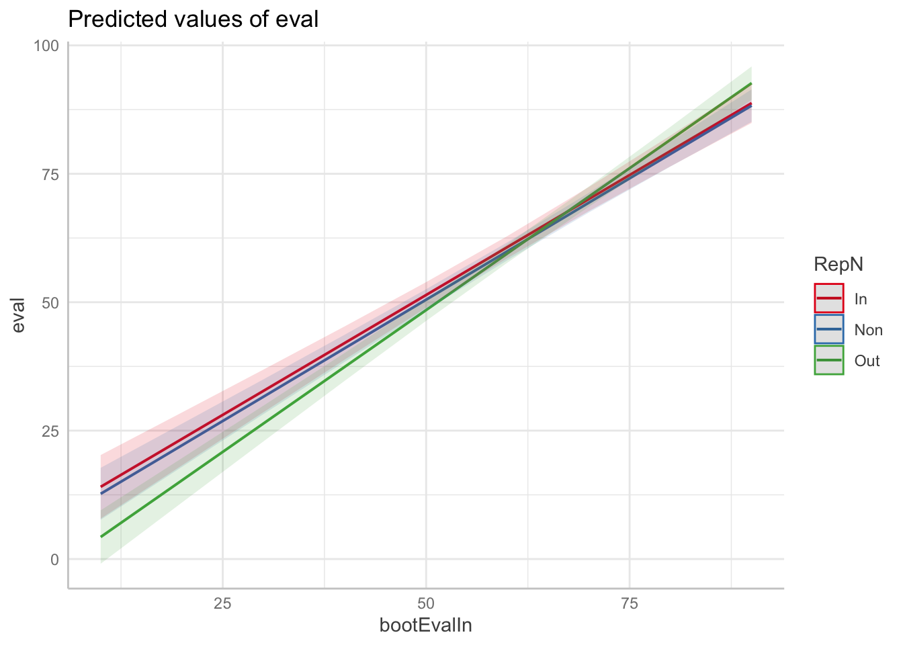

#age
m_age_1 <- describe(longDf1$Age)
m_age_2 <- describe(longDf2$Age)
#gender
gender_1 <- prop.table(table(longDf1$Gender))
gender_2 <- prop.table(table(longDf2$Gender))
#race
longDf1$ethnicity[longDf1$Race == 1] <- "Black"
longDf1$ethnicity[longDf1$Race == 2] <- "Asian"
longDf1$ethnicity[longDf1$Race == 3] <- "White"
longDf1$ethnicity[longDf1$Race == 4] <- "Hispanic"
longDf1$ethnicity[longDf1$Race == 5] <- "Pacific Islander"
longDf2$ethnicity[longDf2$Race ==6] <- "Other"
longDf2$ethnicity[longDf2$Race == 1] <- "Black"
longDf2$ethnicity[longDf2$Race == 2] <- "Asian"
longDf2$ethnicity[longDf2$Race == 3] <- "White"
longDf2$ethnicity[longDf2$Race == 4] <- "Hispanic"
longDf2$ethnicity[longDf2$Race == 5] <- "Pacific Islander"
longDf2$ethnicity[longDf2$Race ==6] <- "Other"
race_1 <- prop.table(table(longDf1$ethnicity))
race_2 <- prop.table(table(longDf2$ethnicity))
#1 = Black, 2 = Asian, 3 = White, 4 = Hispanic, 5 = Pacific Islander, 6 = Other
#education
education_1 <- prop.table(table(longDf1$Education))
education_2 <- prop.table(table(longDf2$Education))
#political affiliation
polit_1 <- prop.table(table(longDf1$Polit))
polit_2 <- prop.table(table(longDf2$Polit))Analysis
Demographics
Similarity of Issues Predicting Similarity of Evaluations
main effect of similarity
Study 1
m_sim_1 <- lmer( scale(dist) ~ scale(corr)+ ( scale(corr) | subID), data = distDf1, control=lmerControl(optimizer="bobyqa",
optCtrl=list(maxfun=2e5)))
summary(m_sim_1)Linear mixed model fit by REML. t-tests use Satterthwaite's method [
lmerModLmerTest]
Formula: scale(dist) ~ scale(corr) + (scale(corr) | subID)
Data: distDf1
Control: lmerControl(optimizer = "bobyqa", optCtrl = list(maxfun = 2e+05))
REML criterion at convergence: 4877056
Scaled residuals:
Min 1Q Median 3Q Max
-3.9077 -0.7749 -0.1156 0.6898 4.4948
Random effects:
Groups Name Variance Std.Dev. Corr
subID (Intercept) 0.05198 0.2280
scale(corr) 0.06509 0.2551 -0.53
Residual 0.80976 0.8999
Number of obs: 1854945, groups: subID, 384
Fixed effects:
Estimate Std. Error df t value Pr(>|t|)
(Intercept) -5.502e-04 1.165e-02 3.829e+02 -0.047 0.962
scale(corr) -2.699e-01 1.304e-02 3.830e+02 -20.700 <2e-16 ***
---
Signif. codes: 0 '***' 0.001 '**' 0.01 '*' 0.05 '.' 0.1 ' ' 1
Correlation of Fixed Effects:
(Intr)
scale(corr) -0.525m_sim_1_CI <- confint(m_sim_1, method= "Wald")
ggpredict(m_sim_1, c("corr")) %>% plot()Study 2
m_sim_2 <- lmer( scale(dist) ~ scale(corr)+ ( scale(corr) | subID), data = distDf2, control=lmerControl(optimizer="bobyqa",
optCtrl=list(maxfun=2e5)))
summary(m_sim_2)Linear mixed model fit by REML. t-tests use Satterthwaite's method [
lmerModLmerTest]
Formula: scale(dist) ~ scale(corr) + (scale(corr) | subID)
Data: distDf2
Control: lmerControl(optimizer = "bobyqa", optCtrl = list(maxfun = 2e+05))
REML criterion at convergence: 4749572
Scaled residuals:
Min 1Q Median 3Q Max
-4.0272 -0.7620 -0.1053 0.7012 4.1752
Random effects:
Groups Name Variance Std.Dev. Corr
subID (Intercept) 0.08004 0.2829
scale(corr) 0.06904 0.2628 -0.52
Residual 0.77339 0.8794
Number of obs: 1838503, groups: subID, 380
Fixed effects:
Estimate Std. Error df t value Pr(>|t|)
(Intercept) 0.001155 0.014527 378.993413 0.08 0.937
scale(corr) -0.279861 0.013495 378.991100 -20.74 <2e-16 ***
---
Signif. codes: 0 '***' 0.001 '**' 0.01 '*' 0.05 '.' 0.1 ' ' 1
Correlation of Fixed Effects:
(Intr)
scale(corr) -0.515m_sim_2_CI <- confint(m_sim_2, method= "Wald")
ggpredict(m_sim_2, c("corr")) %>% plot()Reputation Manipulation
Study 1
m_sim_rep_1 <- lmer( scale(dist) ~ scale(corr) * RepN + ( scale(corr) | subID), data = distDf1, control=lmerControl(optimizer="bobyqa",
optCtrl=list(maxfun=2e5)))
summary(m_sim_rep_1)Linear mixed model fit by REML. t-tests use Satterthwaite's method [
lmerModLmerTest]
Formula: scale(dist) ~ scale(corr) * RepN + (scale(corr) | subID)
Data: distDf1
Control: lmerControl(optimizer = "bobyqa", optCtrl = list(maxfun = 2e+05))
REML criterion at convergence: 4877071
Scaled residuals:
Min 1Q Median 3Q Max
-3.9078 -0.7749 -0.1156 0.6898 4.4949
Random effects:
Groups Name Variance Std.Dev. Corr
subID (Intercept) 0.05223 0.2285
scale(corr) 0.06475 0.2545 -0.53
Residual 0.80976 0.8999
Number of obs: 1854945, groups: subID, 384
Fixed effects:
Estimate Std. Error df t value Pr(>|t|)
(Intercept) 0.001622 0.020154 380.926956 0.080 0.9359
scale(corr) -0.295477 0.022434 381.005477 -13.171 <2e-16 ***
RepNNon -0.008288 0.028340 380.930845 -0.292 0.7701
RepNOut 0.002112 0.028848 380.919266 0.073 0.9417
scale(corr):RepNNon 0.016578 0.031545 381.007749 0.526 0.5995
scale(corr):RepNOut 0.062197 0.032111 381.003028 1.937 0.0535 .
---
Signif. codes: 0 '***' 0.001 '**' 0.01 '*' 0.05 '.' 0.1 ' ' 1
Correlation of Fixed Effects:
(Intr) scl(c) RepNNn RepNOt s():RNN
scale(corr) -0.528
RepNNon -0.711 0.376
RepNOut -0.699 0.369 0.497
scl(cr):RNN 0.376 -0.711 -0.528 -0.263
scl(cr):RNO 0.369 -0.699 -0.263 -0.528 0.497 m_sim_rep_1_CI <- confint(m_sim_rep_1, method= "Wald")
ggpredict(m_sim_rep_1, c("corr","RepN")) %>% plot()
Study 2
m_sim_rep_2 <- lmer( scale(dist) ~ scale(corr) * RepN + ( scale(corr) | subID), data = distDf2, control=lmerControl(optimizer="bobyqa",
optCtrl=list(maxfun=2e5)))
summary(m_sim_rep_2)Linear mixed model fit by REML. t-tests use Satterthwaite's method [
lmerModLmerTest]
Formula: scale(dist) ~ scale(corr) * RepN + (scale(corr) | subID)
Data: distDf2
Control: lmerControl(optimizer = "bobyqa", optCtrl = list(maxfun = 2e+05))
REML criterion at convergence: 4749589
Scaled residuals:
Min 1Q Median 3Q Max
-4.0271 -0.7620 -0.1053 0.7012 4.1753
Random effects:
Groups Name Variance Std.Dev. Corr
subID (Intercept) 0.07982 0.2825
scale(corr) 0.06940 0.2634 -0.52
Residual 0.77339 0.8794
Number of obs: 1838503, groups: subID, 380
Fixed effects:
Estimate Std. Error df t value Pr(>|t|)
(Intercept) -0.018652 0.027468 376.978863 -0.679 0.498
scale(corr) -0.285855 0.025616 376.968941 -11.159 <2e-16 ***
RepNNon 0.002865 0.036193 376.999793 0.079 0.937
RepNOut 0.054723 0.037010 376.981052 1.479 0.140
scale(corr):RepNNon 0.009692 0.033752 376.986104 0.287 0.774
scale(corr):RepNOut 0.006786 0.034514 376.971183 0.197 0.844
---
Signif. codes: 0 '***' 0.001 '**' 0.01 '*' 0.05 '.' 0.1 ' ' 1
Correlation of Fixed Effects:
(Intr) scl(c) RepNNn RepNOt s():RNN
scale(corr) -0.518
RepNNon -0.759 0.393
RepNOut -0.742 0.384 0.563
scl(cr):RNN 0.393 -0.759 -0.518 -0.292
scl(cr):RNO 0.384 -0.742 -0.292 -0.518 0.563 m_sim_rep_2_CI <- confint(m_sim_rep_2, method= "Wald")
ggpredict(m_sim_rep_2, c("corr","RepN")) %>% plot()Info Manipulation
Study 1
m_sim_Info_1 <- lmer( scale(dist) ~ scale(corr) * Info + ( scale(corr) | subID), data = distDf1, control=lmerControl(optimizer="bobyqa",
optCtrl=list(maxfun=2e5)))
summary(m_sim_Info_1)Linear mixed model fit by REML. t-tests use Satterthwaite's method [
lmerModLmerTest]
Formula: scale(dist) ~ scale(corr) * Info + (scale(corr) | subID)
Data: distDf1
Control: lmerControl(optimizer = "bobyqa", optCtrl = list(maxfun = 2e+05))
REML criterion at convergence: 4877061
Scaled residuals:
Min 1Q Median 3Q Max
-3.9079 -0.7748 -0.1156 0.6898 4.4950
Random effects:
Groups Name Variance Std.Dev. Corr
subID (Intercept) 0.05210 0.2283
scale(corr) 0.06444 0.2539 -0.53
Residual 0.80976 0.8999
Number of obs: 1854945, groups: subID, 384
Fixed effects:
Estimate Std. Error df t value Pr(>|t|)
(Intercept) 0.003085 0.016499 381.920663 0.187 0.8518
scale(corr) -0.298442 0.018344 382.007083 -16.269 <2e-16 ***
InfoNon -0.007270 0.023334 381.926029 -0.312 0.7555
scale(corr):InfoNon 0.057172 0.025943 382.011220 2.204 0.0281 *
---
Signif. codes: 0 '***' 0.001 '**' 0.01 '*' 0.05 '.' 0.1 ' ' 1
Correlation of Fixed Effects:
(Intr) scl(c) InfoNn
scale(corr) -0.526
InfoNon -0.707 0.372
scl(crr):IN 0.372 -0.707 -0.526m_sim_rep_2_CI <- confint(m_sim_rep_2, method= "Wald")
ggpredict(m_sim_Info_1, c("corr","Info")) %>% plot()Study 2
m_sim_Info_2 <- lmer( scale(dist) ~ scale(corr) * Info + ( scale(corr) | subID), data = distDf2, control=lmerControl(optimizer="bobyqa",
optCtrl=list(maxfun=2e5)))
summary(m_sim_Info_2)Linear mixed model fit by REML. t-tests use Satterthwaite's method [
lmerModLmerTest]
Formula: scale(dist) ~ scale(corr) * Info + (scale(corr) | subID)
Data: distDf2
Control: lmerControl(optimizer = "bobyqa", optCtrl = list(maxfun = 2e+05))
REML criterion at convergence: 4749577
Scaled residuals:
Min 1Q Median 3Q Max
-4.0270 -0.7620 -0.1053 0.7012 4.1755
Random effects:
Groups Name Variance Std.Dev. Corr
subID (Intercept) 0.08018 0.2832
scale(corr) 0.06867 0.2620 -0.52
Residual 0.77339 0.8794
Number of obs: 1838503, groups: subID, 380
Fixed effects:
Estimate Std. Error df t value Pr(>|t|)
(Intercept) -0.006882 0.020728 377.987107 -0.332 0.7401
scale(corr) -0.303835 0.019185 377.958240 -15.837 <2e-16 ***
InfoNon 0.015825 0.029085 378.001244 0.544 0.5867
scale(corr):InfoNon 0.047205 0.026920 377.972030 1.754 0.0803 .
---
Signif. codes: 0 '***' 0.001 '**' 0.01 '*' 0.05 '.' 0.1 ' ' 1
Correlation of Fixed Effects:
(Intr) scl(c) InfoNn
scale(corr) -0.520
InfoNon -0.713 0.371
scl(crr):IN 0.371 -0.713 -0.520m_sim_Info_2_CI <- confint(m_sim_Info_2, method= "Wald")
ggpredict(m_sim_Info_2, c("corr","Info")) %>% plot()Affective Polarization
Study 1
m_sim_Aff_1<- lmer( scale(dist) ~ scale(corr) * scale(affPol) + ( scale(corr) | subID), data = distDf1, control=lmerControl(optimizer="bobyqa",
optCtrl=list(maxfun=2e5)))
summary(m_sim_Aff_1)Linear mixed model fit by REML. t-tests use Satterthwaite's method [
lmerModLmerTest]
Formula: scale(dist) ~ scale(corr) * scale(affPol) + (scale(corr) | subID)
Data: distDf1
Control: lmerControl(optimizer = "bobyqa", optCtrl = list(maxfun = 2e+05))
REML criterion at convergence: 4865505
Scaled residuals:
Min 1Q Median 3Q Max
-3.9052 -0.7751 -0.1160 0.6905 4.4931
Random effects:
Groups Name Variance Std.Dev. Corr
subID (Intercept) 0.04767 0.2183
scale(corr) 0.05981 0.2446 -0.48
Residual 0.81041 0.9002
Number of obs: 1849995, groups: subID, 383
Fixed effects:
Estimate Std. Error df t value Pr(>|t|)
(Intercept) -1.625e-04 1.118e-02 3.809e+02 -0.015 0.988
scale(corr) -2.705e-01 1.251e-02 3.810e+02 -21.611 < 2e-16 ***
scale(affPol) 6.708e-02 1.118e-02 3.809e+02 6.002 4.55e-09 ***
scale(corr):scale(affPol) -7.386e-02 1.251e-02 3.810e+02 -5.902 7.96e-09 ***
---
Signif. codes: 0 '***' 0.001 '**' 0.01 '*' 0.05 '.' 0.1 ' ' 1
Correlation of Fixed Effects:
(Intr) scl(c) scl(P)
scale(corr) -0.480
scale(ffPl) 0.000 0.000
scl(cr):(P) 0.000 0.000 -0.480m_sim_Aff_1_CI <- confint(m_sim_Aff_1, method= "Wald")
ggpredict(m_sim_Aff_1, c("corr","affPol")) %>% plot()Study 2
m_sim_Aff_2 <- lmer( scale(dist) ~ scale(corr) * scale(affPol) + ( scale(corr) | subID), data = distDf2, control=lmerControl(optimizer="bobyqa",
optCtrl=list(maxfun=2e5)))
summary(m_sim_Aff_2)Linear mixed model fit by REML. t-tests use Satterthwaite's method [
lmerModLmerTest]
Formula: scale(dist) ~ scale(corr) * scale(affPol) + (scale(corr) | subID)
Data: distDf2
Control: lmerControl(optimizer = "bobyqa", optCtrl = list(maxfun = 2e+05))
REML criterion at convergence: 4749528
Scaled residuals:
Min 1Q Median 3Q Max
-4.0269 -0.7620 -0.1054 0.7012 4.1752
Random effects:
Groups Name Variance Std.Dev. Corr
subID (Intercept) 0.07008 0.2647
scale(corr) 0.06352 0.2520 -0.46
Residual 0.77339 0.8794
Number of obs: 1838503, groups: subID, 380
Fixed effects:
Estimate Std. Error df t value Pr(>|t|)
(Intercept) 0.001155 0.013595 378.014049 0.085 0.932
scale(corr) -0.279861 0.012945 377.972105 -21.619 < 2e-16 ***
scale(affPol) 0.100584 0.013595 378.008401 7.398 8.99e-13 ***
scale(corr):scale(affPol) -0.075383 0.012945 377.968325 -5.823 1.23e-08 ***
---
Signif. codes: 0 '***' 0.001 '**' 0.01 '*' 0.05 '.' 0.1 ' ' 1
Correlation of Fixed Effects:
(Intr) scl(c) scl(P)
scale(corr) -0.461
scale(ffPl) 0.000 0.000
scl(cr):(P) 0.000 0.000 -0.461m_sim_Aff_2_CI <- confint(m_sim_Aff_2, method= "Wald")
ggpredict(m_sim_Aff_2, c("corr","affPol")) %>% plot()Interaction between Info and RepN
Study 1
m_sim_Info_Rep_1 <- lmer( scale(dist) ~ scale(corr) * Info * RepN + ( scale(corr) | subID), data = distDf1, control=lmerControl(optimizer="bobyqa",
optCtrl=list(maxfun=2e5)))
summary(m_sim_Info_Rep_1)Linear mixed model fit by REML. t-tests use Satterthwaite's method [
lmerModLmerTest]
Formula: scale(dist) ~ scale(corr) * Info * RepN + (scale(corr) | subID)
Data: distDf1
Control: lmerControl(optimizer = "bobyqa", optCtrl = list(maxfun = 2e+05))
REML criterion at convergence: 4877088
Scaled residuals:
Min 1Q Median 3Q Max
-3.9079 -0.7749 -0.1156 0.6898 4.4953
Random effects:
Groups Name Variance Std.Dev. Corr
subID (Intercept) 0.05193 0.2279
scale(corr) 0.06446 0.2539 -0.53
Residual 0.80976 0.8999
Number of obs: 1854945, groups: subID, 384
Fixed effects:
Estimate Std. Error df t value Pr(>|t|)
(Intercept) 0.03877 0.02728 377.91895 1.421 0.1561
scale(corr) -0.32807 0.03038 377.99701 -10.797 <2e-16 ***
InfoNon -0.08122 0.04034 377.94316 -2.013 0.0448 *
RepNNon -0.05699 0.03916 377.94627 -1.455 0.1465
RepNOut -0.05518 0.04092 377.90915 -1.348 0.1784
scale(corr):InfoNon 0.07126 0.04493 378.01682 1.586 0.1135
scale(corr):RepNNon 0.01968 0.04362 378.01674 0.451 0.6522
scale(corr):RepNOut 0.07839 0.04558 377.99584 1.720 0.0863 .
InfoNon:RepNNon 0.10432 0.05662 377.94528 1.842 0.0662 .
InfoNon:RepNOut 0.11820 0.05775 377.93170 2.047 0.0414 *
scale(corr):InfoNon:RepNNon -0.01228 0.06306 378.01758 -0.195 0.8457
scale(corr):InfoNon:RepNOut -0.04116 0.06432 378.01162 -0.640 0.5227
---
Signif. codes: 0 '***' 0.001 '**' 0.01 '*' 0.05 '.' 0.1 ' ' 1
Correlation of Fixed Effects:
(Intr) scl(c) InfoNn RepNNn RepNOt sc():IN s():RNN s():RNO IN:RNN
scale(corr) -0.530
InfoNon -0.676 0.359
RepNNon -0.697 0.370 0.471
RepNOut -0.667 0.354 0.451 0.464
scl(crr):IN 0.359 -0.676 -0.530 -0.250 -0.239
scl(cr):RNN 0.370 -0.697 -0.250 -0.530 -0.246 0.471
scl(cr):RNO 0.354 -0.667 -0.239 -0.246 -0.530 0.451 0.464
InfNn:RpNNn 0.482 -0.256 -0.712 -0.692 -0.321 0.378 0.367 0.170
InfNn:RpNOt 0.472 -0.251 -0.699 -0.329 -0.709 0.370 0.175 0.376 0.498
sc():IN:RNN -0.256 0.482 0.378 0.367 0.170 -0.712 -0.692 -0.321 -0.530
sc():IN:RNO -0.251 0.472 0.370 0.175 0.376 -0.699 -0.329 -0.709 -0.264
IN:RNO s():IN:RNN
scale(corr)
InfoNon
RepNNon
RepNOut
scl(crr):IN
scl(cr):RNN
scl(cr):RNO
InfNn:RpNNn
InfNn:RpNOt
sc():IN:RNN -0.264
sc():IN:RNO -0.530 0.498 m_sim_Info_Rep_1_CI <- confint(m_sim_Info_Rep_1, method= "Wald")Study 2
m_sim_Info_Rep_2 <- lmer( scale(dist) ~scale(corr) * Info * RepN + ( scale(corr) | subID), data = distDf2, control=lmerControl(optimizer="bobyqa",
optCtrl=list(maxfun=2e5)))
summary(m_sim_Info_Rep_2)Linear mixed model fit by REML. t-tests use Satterthwaite's method [
lmerModLmerTest]
Formula: scale(dist) ~ scale(corr) * Info * RepN + (scale(corr) | subID)
Data: distDf2
Control: lmerControl(optimizer = "bobyqa", optCtrl = list(maxfun = 2e+05))
REML criterion at convergence: 4749606
Scaled residuals:
Min 1Q Median 3Q Max
-4.0268 -0.7620 -0.1053 0.7012 4.1754
Random effects:
Groups Name Variance Std.Dev. Corr
subID (Intercept) 0.08033 0.2834
scale(corr) 0.06918 0.2630 -0.53
Residual 0.77339 0.8794
Number of obs: 1838503, groups: subID, 380
Fixed effects:
Estimate Std. Error df t value Pr(>|t|)
(Intercept) -0.034676 0.040121 373.987231 -0.864 0.388
scale(corr) -0.303164 0.037238 373.946093 -8.141 5.89e-15
InfoNon 0.030332 0.055200 373.990750 0.550 0.583
RepNNon 0.015893 0.053191 373.994609 0.299 0.765
RepNOut 0.058432 0.052377 373.990527 1.116 0.265
scale(corr):InfoNon 0.032763 0.051232 373.949399 0.639 0.523
scale(corr):RepNNon 0.014815 0.049368 373.952521 0.300 0.764
scale(corr):RepNOut -0.015540 0.048613 373.947705 -0.320 0.749
InfoNon:RepNNon -0.024799 0.072791 374.009024 -0.341 0.734
InfoNon:RepNOut -0.003197 0.074464 373.992787 -0.043 0.966
scale(corr):InfoNon:RepNNon -0.010264 0.067559 373.964590 -0.152 0.879
scale(corr):InfoNon:RepNOut 0.054568 0.069112 373.951983 0.790 0.430
(Intercept)
scale(corr) ***
InfoNon
RepNNon
RepNOut
scale(corr):InfoNon
scale(corr):RepNNon
scale(corr):RepNOut
InfoNon:RepNNon
InfoNon:RepNOut
scale(corr):InfoNon:RepNNon
scale(corr):InfoNon:RepNOut
---
Signif. codes: 0 '***' 0.001 '**' 0.01 '*' 0.05 '.' 0.1 ' ' 1
Correlation of Fixed Effects:
(Intr) scl(c) InfoNn RepNNn RepNOt sc():IN s():RNN s():RNO IN:RNN
scale(corr) -0.525
InfoNon -0.727 0.381
RepNNon -0.754 0.396 0.548
RepNOut -0.766 0.402 0.557 0.578
scl(crr):IN 0.381 -0.727 -0.525 -0.288 -0.292
scl(cr):RNN 0.396 -0.754 -0.288 -0.525 -0.303 0.548
scl(cr):RNO 0.402 -0.766 -0.292 -0.303 -0.525 0.557 0.578
InfNn:RpNNn 0.551 -0.289 -0.758 -0.731 -0.422 0.398 0.383 0.222
InfNn:RpNOt 0.539 -0.283 -0.741 -0.406 -0.703 0.389 0.213 0.369 0.562
sc():IN:RNN -0.289 0.551 0.398 0.383 0.222 -0.758 -0.731 -0.422 -0.525
sc():IN:RNO -0.283 0.539 0.389 0.213 0.369 -0.741 -0.406 -0.703 -0.295
IN:RNO s():IN:RNN
scale(corr)
InfoNon
RepNNon
RepNOut
scl(crr):IN
scl(cr):RNN
scl(cr):RNO
InfNn:RpNNn
InfNn:RpNOt
sc():IN:RNN -0.295
sc():IN:RNO -0.525 0.562 m_sim_Info_Rep_1_CI <- confint(m_sim_Info_Rep_2, method= "Wald")Ideological Consistency as Variance Around Ingroup and Outgroup
For Info manipulation
Study 1
m_cons_in_Info_1 <- lm(scale(varAroundIn) ~ Info, varDf1)
summary(m_cons_in_Info_1)
Call:
lm(formula = scale(varAroundIn) ~ Info, data = varDf1)
Residuals:
Min 1Q Median 3Q Max
-1.6448 -0.7293 -0.1592 0.5136 4.5949
Coefficients:
Estimate Std. Error t value Pr(>|t|)
(Intercept) 0.01982 0.07225 0.274 0.784
InfoNon -0.03963 0.10218 -0.388 0.698
Residual standard error: 1.001 on 382 degrees of freedom
Multiple R-squared: 0.0003937, Adjusted R-squared: -0.002223
F-statistic: 0.1505 on 1 and 382 DF, p-value: 0.6983m_cons_in_Info_1_CI <- confint(m_cons_in_Info_1, method= "Wald")
ggpredict(m_cons_in_Info_1, c("Info") ) %>% plot()m_cons_out_Info_1 <- lm(scale(varAroundOut) ~ Info, varDf1)
summary(m_cons_out_Info_1)
Call:
lm(formula = scale(varAroundOut) ~ Info, data = varDf1)
Residuals:
Min 1Q Median 3Q Max
-1.7556 -0.7293 -0.1118 0.5572 5.2745
Coefficients:
Estimate Std. Error t value Pr(>|t|)
(Intercept) 0.13304 0.07162 1.858 0.06400 .
InfoNon -0.26608 0.10128 -2.627 0.00896 **
---
Signif. codes: 0 '***' 0.001 '**' 0.01 '*' 0.05 '.' 0.1 ' ' 1
Residual standard error: 0.9924 on 382 degrees of freedom
Multiple R-squared: 0.01775, Adjusted R-squared: 0.01517
F-statistic: 6.901 on 1 and 382 DF, p-value: 0.00896m_cons_out_Info_1_CI <- confint(m_cons_out_Info_1, method= "Wald")
ggpredict(m_cons_out_Info_1, c("Info") ) %>% plot()Study 2
m_cons_in_Info_2 <- lm(scale(varAroundIn) ~ Info, varDf2)
summary(m_cons_in_Info_2)
Call:
lm(formula = scale(varAroundIn) ~ Info, data = varDf2)
Residuals:
Min 1Q Median 3Q Max
-1.6337 -0.7185 -0.2322 0.5227 3.9474
Coefficients:
Estimate Std. Error t value Pr(>|t|)
(Intercept) -0.10111 0.07286 -1.388 0.1660
InfoNon 0.19907 0.10223 1.947 0.0523 .
---
Signif. codes: 0 '***' 0.001 '**' 0.01 '*' 0.05 '.' 0.1 ' ' 1
Residual standard error: 0.9963 on 378 degrees of freedom
Multiple R-squared: 0.009931, Adjusted R-squared: 0.007312
F-statistic: 3.792 on 1 and 378 DF, p-value: 0.05225m_cons_in_Info_2_CI <- confint(m_cons_in_Info_2, method= "Wald")
ggpredict(m_cons_in_Info_2, c("Info") ) %>% plot()m_cons_out_Info_2<- lm(scale(varAroundOut) ~ Info, varDf2)
summary(m_cons_out_Info_2)
Call:
lm(formula = scale(varAroundOut) ~ Info, data = varDf2)
Residuals:
Min 1Q Median 3Q Max
-2.0484 -0.7342 -0.0690 0.5495 3.7036
Coefficients:
Estimate Std. Error t value Pr(>|t|)
(Intercept) 0.05218 0.07313 0.714 0.476
InfoNon -0.10273 0.10261 -1.001 0.317
Residual standard error: 1 on 378 degrees of freedom
Multiple R-squared: 0.002645, Adjusted R-squared: 6.41e-06
F-statistic: 1.002 on 1 and 378 DF, p-value: 0.3174m_cons_out_Info_2_CI <- confint(m_cons_out_Info_2, method= "Wald")Affective Polarization
Study 1
m_cons_in_Aff_1 <- lm(scale(varAroundIn) ~ scale(affPol), varDf1)
summary(m_cons_in_Aff_1)
Call:
lm(formula = scale(varAroundIn) ~ scale(affPol), data = varDf1)
Residuals:
Min 1Q Median 3Q Max
-1.6426 -0.6960 -0.1775 0.4498 4.8785
Coefficients:
Estimate Std. Error t value Pr(>|t|)
(Intercept) 0.0002978 0.0499799 0.006 0.995
scale(affPol) -0.2199017 0.0500453 -4.394 1.44e-05 ***
---
Signif. codes: 0 '***' 0.001 '**' 0.01 '*' 0.05 '.' 0.1 ' ' 1
Residual standard error: 0.9781 on 381 degrees of freedom
(1 observation deleted due to missingness)
Multiple R-squared: 0.04823, Adjusted R-squared: 0.04573
F-statistic: 19.31 on 1 and 381 DF, p-value: 1.444e-05m_cons_in_Aff_1_CI <- confint(m_cons_in_Aff_1, method= "Wald")
m_cons_out_Aff_1 <- lm(scale(varAroundOut) ~ scale(affPol), varDf1)
summary(m_cons_out_Aff_1)
Call:
lm(formula = scale(varAroundOut) ~ scale(affPol), data = varDf1)
Residuals:
Min 1Q Median 3Q Max
-1.8442 -0.6437 -0.1270 0.4542 4.9254
Coefficients:
Estimate Std. Error t value Pr(>|t|)
(Intercept) 0.003238 0.046879 0.069 0.945
scale(affPol) 0.398862 0.046940 8.497 4.43e-16 ***
---
Signif. codes: 0 '***' 0.001 '**' 0.01 '*' 0.05 '.' 0.1 ' ' 1
Residual standard error: 0.9174 on 381 degrees of freedom
(1 observation deleted due to missingness)
Multiple R-squared: 0.1593, Adjusted R-squared: 0.1571
F-statistic: 72.2 on 1 and 381 DF, p-value: 4.433e-16m_cons_out_Aff_1_CI <- confint(m_cons_out_Aff_1, method= "Wald")Study 2
m_cons_in_Aff_2 <- lm(scale(varAroundIn) ~ scale(affPol), varDf2)
summary(m_cons_in_Aff_2)
Call:
lm(formula = scale(varAroundIn) ~ scale(affPol), data = varDf2)
Residuals:
Min 1Q Median 3Q Max
-1.5670 -0.7303 -0.1806 0.4495 4.2940
Coefficients:
Estimate Std. Error t value Pr(>|t|)
(Intercept) -5.857e-17 5.050e-02 0.000 1.000000
scale(affPol) -1.827e-01 5.057e-02 -3.614 0.000343 ***
---
Signif. codes: 0 '***' 0.001 '**' 0.01 '*' 0.05 '.' 0.1 ' ' 1
Residual standard error: 0.9845 on 378 degrees of freedom
Multiple R-squared: 0.03339, Adjusted R-squared: 0.03084
F-statistic: 13.06 on 1 and 378 DF, p-value: 0.0003426m_cons_in_Aff_2_CI <- confint(m_cons_in_Aff_2, method= "Wald")
m_cons_out_Aff_2 <- lm(scale(varAroundOut) ~ scale(affPol), varDf2)
summary(m_cons_out_Aff_2)
Call:
lm(formula = scale(varAroundOut) ~ scale(affPol), data = varDf2)
Residuals:
Min 1Q Median 3Q Max
-1.78575 -0.65947 -0.08496 0.48964 3.13819
Coefficients:
Estimate Std. Error t value Pr(>|t|)
(Intercept) -3.326e-17 4.679e-02 0.000 1
scale(affPol) 4.128e-01 4.685e-02 8.812 <2e-16 ***
---
Signif. codes: 0 '***' 0.001 '**' 0.01 '*' 0.05 '.' 0.1 ' ' 1
Residual standard error: 0.912 on 378 degrees of freedom
Multiple R-squared: 0.1704, Adjusted R-squared: 0.1682
F-statistic: 77.65 on 1 and 378 DF, p-value: < 2.2e-16m_cons_out_Aff_2_CI <- confint(m_cons_out_Aff_2, method= "Wald")RepN manipulation
Study 1
m_cons_in_Rep_1 <- lm(scale(varAroundIn) ~ RepN, varDf1)
summary(m_cons_in_Rep_1)
Call:
lm(formula = scale(varAroundIn) ~ RepN, data = varDf1)
Residuals:
Min 1Q Median 3Q Max
-1.6173 -0.7207 -0.1648 0.4880 4.6224
Coefficients:
Estimate Std. Error t value Pr(>|t|)
(Intercept) -0.15683 0.08748 -1.793 0.07382 .
RepNNon 0.14916 0.12301 1.213 0.22605
RepNOut 0.32953 0.12522 2.632 0.00884 **
---
Signif. codes: 0 '***' 0.001 '**' 0.01 '*' 0.05 '.' 0.1 ' ' 1
Residual standard error: 0.9936 on 381 degrees of freedom
Multiple R-squared: 0.01788, Adjusted R-squared: 0.01273
F-statistic: 3.469 on 2 and 381 DF, p-value: 0.03215m_cons_in_Rep_1_CI <- confint(m_cons_in_Rep_1, method= "Wald")
m_cons_out_Rep_1<- lm(scale(varAroundOut) ~ RepN, varDf1)
summary(m_cons_out_Rep_1)
Call:
lm(formula = scale(varAroundOut) ~ RepN, data = varDf1)
Residuals:
Min 1Q Median 3Q Max
-1.8127 -0.7090 -0.1023 0.5740 5.4210
Coefficients:
Estimate Std. Error t value Pr(>|t|)
(Intercept) -1.342e-02 8.826e-02 -0.152 0.879
RepNNon -5.166e-05 1.241e-01 0.000 1.000
RepNOut 4.194e-02 1.263e-01 0.332 0.740
Residual standard error: 1.002 on 381 degrees of freedom
Multiple R-squared: 0.0003844, Adjusted R-squared: -0.004863
F-statistic: 0.07326 on 2 and 381 DF, p-value: 0.9294m_cons_out_Rep_1_CI <- confint(m_cons_out_Rep_1, method= "Wald")Study 2
m_cons_in_Rep_2 <- lm(scale(varAroundIn) ~ RepN, varDf2)
summary(m_cons_in_Rep_2)
Call:
lm(formula = scale(varAroundIn) ~ RepN, data = varDf2)
Residuals:
Min 1Q Median 3Q Max
-1.6221 -0.7170 -0.2478 0.4966 3.9537
Coefficients:
Estimate Std. Error t value Pr(>|t|)
(Intercept) 0.09167 0.09722 0.943 0.346
RepNNon -0.13518 0.12810 -1.055 0.292
RepNOut -0.11821 0.13100 -0.902 0.367
Residual standard error: 1.001 on 377 degrees of freedom
Multiple R-squared: 0.003311, Adjusted R-squared: -0.001976
F-statistic: 0.6262 on 2 and 377 DF, p-value: 0.5352m_cons_in_Rep_2_CI <- confint(m_cons_in_Rep_2, method= "Wald")
m_cons_out_Rep_2 <- lm(scale(varAroundOut) ~ RepN, varDf2)
summary(m_cons_out_Rep_2)
Call:
lm(formula = scale(varAroundOut) ~ RepN, data = varDf2)
Residuals:
Min 1Q Median 3Q Max
-2.0694 -0.7209 -0.0783 0.5231 3.7890
Coefficients:
Estimate Std. Error t value Pr(>|t|)
(Intercept) 0.09493 0.09683 0.980 0.3275
RepNNon -0.23090 0.12758 -1.810 0.0711 .
RepNOut -0.02172 0.13047 -0.166 0.8679
---
Signif. codes: 0 '***' 0.001 '**' 0.01 '*' 0.05 '.' 0.1 ' ' 1
Residual standard error: 0.9969 on 377 degrees of freedom
Multiple R-squared: 0.01138, Adjusted R-squared: 0.006138
F-statistic: 2.17 on 2 and 377 DF, p-value: 0.1156m_cons_out_Rep_2_CI <- confint(m_cons_out_Rep_2, method= "Wald")Aff pol with Info manipulation
driven by aff, not info
Study 1
m_cons_in_Aff_Info_1 <- lm(scale(varAroundIn) ~ scale(affPol)*Info, varDf1)
summary(m_cons_in_Aff_Info_1)
Call:
lm(formula = scale(varAroundIn) ~ scale(affPol) * Info, data = varDf1)
Residuals:
Min 1Q Median 3Q Max
-1.7396 -0.6914 -0.1973 0.4768 4.9369
Coefficients:
Estimate Std. Error t value Pr(>|t|)
(Intercept) 0.02745 0.07061 0.389 0.698
scale(affPol) -0.29112 0.07262 -4.009 7.35e-05 ***
InfoNon -0.05090 0.09999 -0.509 0.611
scale(affPol):InfoNon 0.13444 0.10024 1.341 0.181
---
Signif. codes: 0 '***' 0.001 '**' 0.01 '*' 0.05 '.' 0.1 ' ' 1
Residual standard error: 0.9781 on 379 degrees of freedom
(1 observation deleted due to missingness)
Multiple R-squared: 0.05337, Adjusted R-squared: 0.04587
F-statistic: 7.122 on 3 and 379 DF, p-value: 0.0001151m_cons_in_Aff_Info_1_CI <- confint(m_cons_in_Aff_Info_1, method= "Wald")
m_cons_out_Aff_Info_1<- lm(scale(varAroundOut) ~ RepN, varDf1)
summary(m_cons_out_Aff_Info_1)
Call:
lm(formula = scale(varAroundOut) ~ RepN, data = varDf1)
Residuals:
Min 1Q Median 3Q Max
-1.8127 -0.7090 -0.1023 0.5740 5.4210
Coefficients:
Estimate Std. Error t value Pr(>|t|)
(Intercept) -1.342e-02 8.826e-02 -0.152 0.879
RepNNon -5.166e-05 1.241e-01 0.000 1.000
RepNOut 4.194e-02 1.263e-01 0.332 0.740
Residual standard error: 1.002 on 381 degrees of freedom
Multiple R-squared: 0.0003844, Adjusted R-squared: -0.004863
F-statistic: 0.07326 on 2 and 381 DF, p-value: 0.9294m_cons_out_Aff_Info_1_CI <- confint(m_cons_out_Aff_Info_1, method= "Wald")Study 2
m_cons_in_Aff_Info_2 <- lm(scale(varAroundIn) ~ RepN, varDf2)
summary(m_cons_in_Aff_Info_2)
Call:
lm(formula = scale(varAroundIn) ~ RepN, data = varDf2)
Residuals:
Min 1Q Median 3Q Max
-1.6221 -0.7170 -0.2478 0.4966 3.9537
Coefficients:
Estimate Std. Error t value Pr(>|t|)
(Intercept) 0.09167 0.09722 0.943 0.346
RepNNon -0.13518 0.12810 -1.055 0.292
RepNOut -0.11821 0.13100 -0.902 0.367
Residual standard error: 1.001 on 377 degrees of freedom
Multiple R-squared: 0.003311, Adjusted R-squared: -0.001976
F-statistic: 0.6262 on 2 and 377 DF, p-value: 0.5352m_cons_in_Aff_Info_2_CI <- confint(m_cons_in_Aff_Info_2, method= "Wald")
m_cons_out_Aff_Info_2 <- lm(scale(varAroundOut) ~ RepN, varDf2)
summary(m_cons_out_Aff_Info_2)
Call:
lm(formula = scale(varAroundOut) ~ RepN, data = varDf2)
Residuals:
Min 1Q Median 3Q Max
-2.0694 -0.7209 -0.0783 0.5231 3.7890
Coefficients:
Estimate Std. Error t value Pr(>|t|)
(Intercept) 0.09493 0.09683 0.980 0.3275
RepNNon -0.23090 0.12758 -1.810 0.0711 .
RepNOut -0.02172 0.13047 -0.166 0.8679
---
Signif. codes: 0 '***' 0.001 '**' 0.01 '*' 0.05 '.' 0.1 ' ' 1
Residual standard error: 0.9969 on 377 degrees of freedom
Multiple R-squared: 0.01138, Adjusted R-squared: 0.006138
F-statistic: 2.17 on 2 and 377 DF, p-value: 0.1156m_cons_out_Aff_Info_2_CI <- confint(m_cons_out_Aff_Info_2, method= "Wald")Ideological polarization models
main effect of inter-group favorability
Study 1
m_pol_main_1 <- lmer( scale(eval) ~ scale(inMinOut) + ( scale(inMinOut) | subID) + (1 | issues), data = longDf1, control=lmerControl(optimizer="bobyqa",
optCtrl=list(maxfun=2e5)))
summary(m_pol_main_1)Linear mixed model fit by REML. t-tests use Satterthwaite's method [
lmerModLmerTest]
Formula: scale(eval) ~ scale(inMinOut) + (scale(inMinOut) | subID) + (1 |
issues)
Data: longDf1
Control: lmerControl(optimizer = "bobyqa", optCtrl = list(maxfun = 2e+05))
REML criterion at convergence: 85146.4
Scaled residuals:
Min 1Q Median 3Q Max
-4.4288 -0.6312 0.0951 0.6608 4.3606
Random effects:
Groups Name Variance Std.Dev. Corr
subID (Intercept) 0.02845 0.1687
scale(inMinOut) 0.06564 0.2562 -0.46
issues (Intercept) 0.24188 0.4918
Residual 0.52266 0.7230
Number of obs: 37917, groups: subID, 384; issues, 100
Fixed effects:
Estimate Std. Error df t value Pr(>|t|)
(Intercept) -0.003065 0.050152 104.847580 -0.061 0.951
scale(inMinOut) 0.380132 0.013619 381.691432 27.912 <2e-16 ***
---
Signif. codes: 0 '***' 0.001 '**' 0.01 '*' 0.05 '.' 0.1 ' ' 1
Correlation of Fixed Effects:
(Intr)
scal(nMnOt) -0.075m_pol_main_1_CI <- confint(m_pol_main_1, method= "Wald")
ggpredict(m_pol_main_1, c("inMinOut")) %>% plot()Study 2
m_pol_main_2 <- lmer( scale(eval) ~ scale(inMinOut) + ( scale(inMinOut) | subID) + (1 | issues), data = longDf2, control=lmerControl(optimizer="bobyqa",
optCtrl=list(maxfun=2e5)))
summary(m_pol_main_2)Linear mixed model fit by REML. t-tests use Satterthwaite's method [
lmerModLmerTest]
Formula: scale(eval) ~ scale(inMinOut) + (scale(inMinOut) | subID) + (1 |
issues)
Data: longDf2
Control: lmerControl(optimizer = "bobyqa", optCtrl = list(maxfun = 2e+05))
REML criterion at convergence: 84255.4
Scaled residuals:
Min 1Q Median 3Q Max
-4.2024 -0.6303 0.0562 0.6534 3.7418
Random effects:
Groups Name Variance Std.Dev. Corr
subID (Intercept) 0.03791 0.1947
scale(inMinOut) 0.05771 0.2402 -0.35
issues (Intercept) 0.29205 0.5404
Residual 0.52035 0.7214
Number of obs: 37549, groups: subID, 380; issues, 100
Fixed effects:
Estimate Std. Error df t value Pr(>|t|)
(Intercept) 7.125e-04 5.515e-02 1.043e+02 0.013 0.99
scale(inMinOut) 3.084e-01 1.291e-02 3.780e+02 23.900 <2e-16 ***
---
Signif. codes: 0 '***' 0.001 '**' 0.01 '*' 0.05 '.' 0.1 ' ' 1
Correlation of Fixed Effects:
(Intr)
scal(nMnOt) -0.060m_pol_main_2_CI <- confint(m_pol_main_2, method= "Wald")
ggpredict(m_pol_main_2, c("inMinOut")) %>% plot()effect of Info
Study 1
m_pol_Info_1 <- lmer( scale(eval) ~ scale(inMinOut) * Info + ( scale(inMinOut) | subID) + (1 | issues), data = longDf1, control=lmerControl(optimizer="bobyqa",
optCtrl=list(maxfun=2e5)))
summary(m_pol_Info_1)Linear mixed model fit by REML. t-tests use Satterthwaite's method [
lmerModLmerTest]
Formula: scale(eval) ~ scale(inMinOut) * Info + (scale(inMinOut) | subID) +
(1 | issues)
Data: longDf1
Control: lmerControl(optimizer = "bobyqa", optCtrl = list(maxfun = 2e+05))
REML criterion at convergence: 85153.4
Scaled residuals:
Min 1Q Median 3Q Max
-4.4206 -0.6319 0.0958 0.6610 4.3618
Random effects:
Groups Name Variance Std.Dev. Corr
subID (Intercept) 0.02849 0.1688
scale(inMinOut) 0.06448 0.2539 -0.46
issues (Intercept) 0.24182 0.4918
Residual 0.52267 0.7230
Number of obs: 37917, groups: subID, 384; issues, 100
Fixed effects:
Estimate Std. Error df t value Pr(>|t|)
(Intercept) -0.003119 0.050146 104.863219 -0.062 0.95053
scale(inMinOut) 0.380122 0.013508 380.615467 28.141 < 2e-16 ***
Info1 -0.006245 0.009425 380.437094 -0.663 0.50796
scale(inMinOut):Info1 0.036526 0.013508 380.620529 2.704 0.00716 **
---
Signif. codes: 0 '***' 0.001 '**' 0.01 '*' 0.05 '.' 0.1 ' ' 1
Correlation of Fixed Effects:
(Intr) sc(MO) Info1
scal(nMnOt) -0.075
Info1 0.000 0.000
scl(nMO):I1 -0.001 0.000 -0.400m_pol_Info_1_CI <- confint(m_pol_Info_1, method= "Wald")
ggpredict(m_pol_Info_1) %>% plot()$inMinOut
$Info
Study 2
m_pol_Info_2 <- lmer( scale(eval) ~ scale(inMinOut) * Info + ( scale(inMinOut) | subID) + (1 | issues), data = longDf2, control=lmerControl(optimizer="bobyqa",
optCtrl=list(maxfun=2e5)))
summary(m_pol_Info_2)Linear mixed model fit by REML. t-tests use Satterthwaite's method [
lmerModLmerTest]
Formula: scale(eval) ~ scale(inMinOut) * Info + (scale(inMinOut) | subID) +
(1 | issues)
Data: longDf2
Control: lmerControl(optimizer = "bobyqa", optCtrl = list(maxfun = 2e+05))
REML criterion at convergence: 84258.6
Scaled residuals:
Min 1Q Median 3Q Max
-4.2083 -0.6302 0.0562 0.6536 3.7512
Random effects:
Groups Name Variance Std.Dev. Corr
subID (Intercept) 0.03753 0.1937
scale(inMinOut) 0.05622 0.2371 -0.34
issues (Intercept) 0.29067 0.5391
Residual 0.52036 0.7214
Number of obs: 37549, groups: subID, 380; issues, 100
Fixed effects:
Estimate Std. Error df t value Pr(>|t|)
(Intercept) -0.000317 0.055019 104.330728 -0.006 0.99541
scale(inMinOut) 0.309026 0.012754 376.943450 24.230 < 2e-16 ***
Info1 -0.021895 0.010652 378.256139 -2.056 0.04051 *
scale(inMinOut):Info1 0.040220 0.012777 377.305460 3.148 0.00178 **
---
Signif. codes: 0 '***' 0.001 '**' 0.01 '*' 0.05 '.' 0.1 ' ' 1
Correlation of Fixed Effects:
(Intr) sc(MO) Info1
scal(nMnOt) -0.057
Info1 0.003 -0.006
scl(nMO):I1 -0.004 0.014 -0.298m_pol_Info_2_CI <- confint(m_pol_Info_2, method= "Wald")
ggpredict(m_pol_Info_2, c("inMinOut", "Info")) %>% plot()Effect of Affective polarization
Study 1
m_pol_Aff_1<- lmer( scale(eval) ~ scale(inMinOut) * scale(affPol) + ( scale(inMinOut) + scale(affPol) | subID) + (1 | issues), data = longDf1, control=lmerControl(optimizer="bobyqa",
optCtrl=list(maxfun=2e5)))
summary(m_pol_Aff_1)Linear mixed model fit by REML. t-tests use Satterthwaite's method [
lmerModLmerTest]
Formula: scale(eval) ~ scale(inMinOut) * scale(affPol) + (scale(inMinOut) +
scale(affPol) | subID) + (1 | issues)
Data: longDf1
Control: lmerControl(optimizer = "bobyqa", optCtrl = list(maxfun = 2e+05))
REML criterion at convergence: 84777.5
Scaled residuals:
Min 1Q Median 3Q Max
-4.4364 -0.6331 0.0966 0.6605 4.3621
Random effects:
Groups Name Variance Std.Dev. Corr
subID (Intercept) 0.024688 0.15712
scale(inMinOut) 0.048260 0.21968 -0.53
scale(affPol) 0.004275 0.06538 -0.58 -0.29
issues (Intercept) 0.236896 0.48672
Residual 0.522968 0.72317
Number of obs: 37817, groups: subID, 383; issues, 100
Fixed effects:
Estimate Std. Error df t value Pr(>|t|)
(Intercept) -0.007687 0.049614 105.124540 -0.155 0.877
scale(inMinOut) 0.380706 0.011854 380.241024 32.117 <2e-16
scale(affPol) -0.013303 0.010309 212.872920 -1.290 0.198
scale(inMinOut):scale(affPol) 0.135395 0.011902 382.341791 11.376 <2e-16
(Intercept)
scale(inMinOut) ***
scale(affPol)
scale(inMinOut):scale(affPol) ***
---
Signif. codes: 0 '***' 0.001 '**' 0.01 '*' 0.05 '.' 0.1 ' ' 1
Correlation of Fixed Effects:
(Intr) sc(MO) scl(P)
scal(nMnOt) -0.081
scale(ffPl) -0.062 -0.091
scl(MO):(P) -0.022 0.001 -0.370m_pol_Aff_1_CI <- confint(m_pol_Aff_1, method= "Wald")
ggpredict(m_pol_Aff_1, c("inMinOut", "affPol")) %>% plot()
Study 2
m_pol_Aff_2 <- lmer( scale(eval) ~ scale(inMinOut) * scale(affPol) +scale(inMinOut) + ( scale(inMinOut) + scale(affPol) | subID) + (1 | issues), data = longDf2, control=lmerControl(optimizer="bobyqa",
optCtrl=list(maxfun=2e5)))
summary(m_pol_Aff_2)Linear mixed model fit by REML. t-tests use Satterthwaite's method [
lmerModLmerTest]
Formula: scale(eval) ~ scale(inMinOut) * scale(affPol) + scale(inMinOut) +
(scale(inMinOut) + scale(affPol) | subID) + (1 | issues)
Data: longDf2
Control: lmerControl(optimizer = "bobyqa", optCtrl = list(maxfun = 2e+05))
REML criterion at convergence: 84067
Scaled residuals:
Min 1Q Median 3Q Max
-4.2138 -0.6316 0.0573 0.6537 3.7027
Random effects:
Groups Name Variance Std.Dev. Corr
subID (Intercept) 0.02335 0.1528
scale(inMinOut) 0.03993 0.1998 -0.30
scale(affPol) 0.01486 0.1219 -0.58 0.03
issues (Intercept) 0.28240 0.5314
Residual 0.52035 0.7214
Number of obs: 37549, groups: subID, 380; issues, 100
Fixed effects:
Estimate Std. Error df t value Pr(>|t|)
(Intercept) -0.01001 0.05413 104.01085 -0.185 0.85367
scale(inMinOut) 0.30890 0.01094 376.29772 28.233 < 2e-16
scale(affPol) -0.03481 0.01274 203.65102 -2.733 0.00682
scale(inMinOut):scale(affPol) 0.13623 0.01109 378.26709 12.282 < 2e-16
(Intercept)
scale(inMinOut) ***
scale(affPol) **
scale(inMinOut):scale(affPol) ***
---
Signif. codes: 0 '***' 0.001 '**' 0.01 '*' 0.05 '.' 0.1 ' ' 1
Correlation of Fixed Effects:
(Intr) sc(MO) scl(P)
scal(nMnOt) -0.040
scale(ffPl) -0.087 0.012
scl(MO):(P) -0.005 -0.004 -0.169m_pol_Aff_2_CI <- confint(m_pol_Aff_2, method= "Wald")
ggpredict(m_pol_Aff_2, c("inMinOut", "affPol")) %>% plot()Effect of Affective polarization & info in the same model
Study 1
m_pol_Aff_Info_1 <- lmer( scale(eval) ~ scale(inMinOut) * scale(affPol) +scale(inMinOut) * as.factor(Info) + ( scale(inMinOut) + scale(affPol) | subID) + (1 | issues), data = longDf1, control=lmerControl(optimizer="bobyqa",
optCtrl=list(maxfun=2e5)))
summary(m_pol_Aff_Info_1)Linear mixed model fit by REML. t-tests use Satterthwaite's method [
lmerModLmerTest]
Formula: scale(eval) ~ scale(inMinOut) * scale(affPol) + scale(inMinOut) *
as.factor(Info) + (scale(inMinOut) + scale(affPol) | subID) +
(1 | issues)
Data: longDf1
Control: lmerControl(optimizer = "bobyqa", optCtrl = list(maxfun = 2e+05))
REML criterion at convergence: 84784.4
Scaled residuals:
Min 1Q Median 3Q Max
-4.4219 -0.6329 0.0963 0.6603 4.3634
Random effects:
Groups Name Variance Std.Dev. Corr
subID (Intercept) 0.024706 0.15718
scale(inMinOut) 0.047317 0.21752 -0.53
scale(affPol) 0.004361 0.06604 -0.57 -0.30
issues (Intercept) 0.236908 0.48673
Residual 0.522974 0.72317
Number of obs: 37817, groups: subID, 383; issues, 100
Fixed effects:
Estimate Std. Error df t value
(Intercept) -0.007667 0.049616 105.141207 -0.155
scale(inMinOut) 0.380614 0.011749 379.170145 32.394
scale(affPol) -0.013090 0.010327 213.530819 -1.268
as.factor(Info)1 -0.006683 0.008595 345.504472 -0.778
scale(inMinOut):scale(affPol) 0.134532 0.011797 380.943885 11.404
scale(inMinOut):as.factor(Info)1 0.032361 0.011694 379.368863 2.767
Pr(>|t|)
(Intercept) 0.87749
scale(inMinOut) < 2e-16 ***
scale(affPol) 0.20632
as.factor(Info)1 0.43737
scale(inMinOut):scale(affPol) < 2e-16 ***
scale(inMinOut):as.factor(Info)1 0.00593 **
---
Signif. codes: 0 '***' 0.001 '**' 0.01 '*' 0.05 '.' 0.1 ' ' 1
Correlation of Fixed Effects:
(Intr) sc(MO) scl(P) a.(I)1 s(MO):(
scal(nMnOt) -0.081
scale(ffPl) -0.062 -0.094
as.fctr(I)1 -0.001 0.001 -0.016
scl(MO):(P) -0.023 0.001 -0.371 0.015
s(MO):.(I)1 0.000 -0.003 0.014 -0.515 -0.026 m_pol_Aff_Info_1_CI <- confint(m_pol_Aff_Info_1, method= "Wald")Study 2
m_pol_Aff_Info_2<- lmer( scale(eval) ~ scale(inMinOut) * scale(affPol) +scale(inMinOut) * scale(inMinOut) * Info + ( scale(inMinOut) + scale(affPol) | subID) + (1 | issues), data = longDf2, control=lmerControl(optimizer="bobyqa",
optCtrl=list(maxfun=2e5)))
summary(m_pol_Aff_Info_2)Linear mixed model fit by REML. t-tests use Satterthwaite's method [
lmerModLmerTest]
Formula: scale(eval) ~ scale(inMinOut) * scale(affPol) + scale(inMinOut) *
scale(inMinOut) * Info + (scale(inMinOut) + scale(affPol) |
subID) + (1 | issues)
Data: longDf2
Control: lmerControl(optimizer = "bobyqa", optCtrl = list(maxfun = 2e+05))
REML criterion at convergence: 84062.4
Scaled residuals:
Min 1Q Median 3Q Max
-4.2260 -0.6319 0.0570 0.6535 3.7135
Random effects:
Groups Name Variance Std.Dev. Corr
subID (Intercept) 0.02279 0.1510
scale(inMinOut) 0.03795 0.1948 -0.26
scale(affPol) 0.01488 0.1220 -0.58 0.04
issues (Intercept) 0.28016 0.5293
Residual 0.52035 0.7214
Number of obs: 37549, groups: subID, 380; issues, 100
Fixed effects:
Estimate Std. Error df t value Pr(>|t|)
(Intercept) -0.011365 0.053908 104.020153 -0.211 0.83344
scale(inMinOut) 0.309488 0.010702 375.521420 28.920 < 2e-16
scale(affPol) -0.035798 0.012703 203.364328 -2.818 0.00531
Info1 -0.022021 0.008809 327.885188 -2.500 0.01291
scale(inMinOut):scale(affPol) 0.138047 0.010855 377.232200 12.717 < 2e-16
scale(inMinOut):Info1 0.044830 0.010728 375.809750 4.179 3.65e-05
(Intercept)
scale(inMinOut) ***
scale(affPol) **
Info1 *
scale(inMinOut):scale(affPol) ***
scale(inMinOut):Info1 ***
---
Signif. codes: 0 '***' 0.001 '**' 0.01 '*' 0.05 '.' 0.1 ' ' 1
Correlation of Fixed Effects:
(Intr) sc(MO) scl(P) Info1 s(MO):(
scal(nMnOt) -0.035
scale(ffPl) -0.087 0.014
Info1 0.000 -0.004 0.046
scl(MO):(P) -0.005 -0.004 -0.147 -0.003
scl(nMO):I1 -0.004 0.014 0.001 -0.211 0.034 m_pol_Aff_Info_2_CI <- confint(m_pol_Aff_Info_2, method= "Wald")Effect of Affective polarization & info *in the same model & reputation
Study 1
m <- lmer( scale(eval) ~ scale(inMinOut) * Info * scale(affPol) + ( scale(inMinOut) | subID) + (1 | issues), data = longDf1, control=lmerControl(optimizer="bobyqa",
optCtrl=list(maxfun=2e5)))
summary(m)Linear mixed model fit by REML. t-tests use Satterthwaite's method [
lmerModLmerTest]
Formula:
scale(eval) ~ scale(inMinOut) * Info * scale(affPol) + (scale(inMinOut) |
subID) + (1 | issues)
Data: longDf1
Control: lmerControl(optimizer = "bobyqa", optCtrl = list(maxfun = 2e+05))
REML criterion at convergence: 84861.9
Scaled residuals:
Min 1Q Median 3Q Max
-4.4191 -0.6330 0.0957 0.6617 4.3614
Random effects:
Groups Name Variance Std.Dev. Corr
subID (Intercept) 0.02826 0.1681
scale(inMinOut) 0.04720 0.2173 -0.48
issues (Intercept) 0.23678 0.4866
Residual 0.52299 0.7232
Number of obs: 37817, groups: subID, 383; issues, 100
Fixed effects:
Estimate Std. Error df t value
(Intercept) -0.007379 0.049617 105.184095 -0.149
scale(inMinOut) 0.380198 0.011743 378.063280 32.376
Info1 -0.005973 0.009408 377.660296 -0.635
scale(affPol) -0.015397 0.009420 377.629512 -1.635
scale(inMinOut):Info1 0.032485 0.011743 378.062567 2.766
scale(inMinOut):scale(affPol) 0.134805 0.011891 381.582259 11.337
Info1:scale(affPol) -0.010866 0.009420 377.626734 -1.154
scale(inMinOut):Info1:scale(affPol) 0.014272 0.011761 378.238678 1.213
Pr(>|t|)
(Intercept) 0.88206
scale(inMinOut) < 2e-16 ***
Info1 0.52591
scale(affPol) 0.10297
scale(inMinOut):Info1 0.00595 **
scale(inMinOut):scale(affPol) < 2e-16 ***
Info1:scale(affPol) 0.24942
scale(inMinOut):Info1:scale(affPol) 0.22570
---
Signif. codes: 0 '***' 0.001 '**' 0.01 '*' 0.05 '.' 0.1 ' ' 1
Correlation of Fixed Effects:
(Intr) sc(MO) Info1 scl(P) sc(MO):I1 s(MO):( I1:(P)
scal(nMnOt) -0.078
Info1 -0.001 0.001
scale(ffPl) 0.000 -0.005 -0.027
scl(nMO):I1 0.000 -0.003 -0.412 0.011
scl(MO):(P) -0.008 -0.002 0.011 -0.396 -0.026
Inf1:scl(P) -0.005 0.011 -0.001 0.050 -0.005 -0.019
s(MO):I1:(P 0.003 -0.027 -0.005 -0.020 -0.002 0.046 -0.400m_pol_Aff_Info_2_CI <- confint(m_pol_Aff_Info_2, method= "Wald")
ggpredict(m, c("inMinOut", "affPol", "Info")) %>% plot()Study 2
m <- lmer( scale(eval) ~ scale(inMinOut) * Info * scale(affPol) + ( scale(inMinOut) | subID) + (1 | issues), data = longDf2, control=lmerControl(optimizer="bobyqa",
optCtrl=list(maxfun=2e5)))
summary(m)Linear mixed model fit by REML. t-tests use Satterthwaite's method [
lmerModLmerTest]
Formula:
scale(eval) ~ scale(inMinOut) * Info * scale(affPol) + (scale(inMinOut) |
subID) + (1 | issues)
Data: longDf2
Control: lmerControl(optimizer = "bobyqa", optCtrl = list(maxfun = 2e+05))
REML criterion at convergence: 84150.8
Scaled residuals:
Min 1Q Median 3Q Max
-4.2509 -0.6305 0.0561 0.6532 3.7096
Random effects:
Groups Name Variance Std.Dev. Corr
subID (Intercept) 0.03559 0.1886
scale(inMinOut) 0.03780 0.1944 -0.21
issues (Intercept) 0.27907 0.5283
Residual 0.52036 0.7214
Number of obs: 37549, groups: subID, 380; issues, 100
Fixed effects:
Estimate Std. Error df t value
(Intercept) -0.006528 0.053890 104.770752 -0.121
scale(inMinOut) 0.308793 0.010689 375.031961 28.889
Info1 -0.022765 0.010411 376.202270 -2.187
scale(affPol) -0.045528 0.010454 376.000997 -4.355
scale(inMinOut):Info1 0.045055 0.010712 375.275191 4.206
scale(inMinOut):scale(affPol) 0.138097 0.010867 376.204046 12.708
Info1:scale(affPol) -0.001333 0.010454 376.001070 -0.127
scale(inMinOut):Info1:scale(affPol) 0.009830 0.010769 375.331738 0.913
Pr(>|t|)
(Intercept) 0.9038
scale(inMinOut) < 2e-16 ***
Info1 0.0294 *
scale(affPol) 1.72e-05 ***
scale(inMinOut):Info1 3.25e-05 ***
scale(inMinOut):scale(affPol) < 2e-16 ***
Info1:scale(affPol) 0.8986
scale(inMinOut):Info1:scale(affPol) 0.3619
---
Signif. codes: 0 '***' 0.001 '**' 0.01 '*' 0.05 '.' 0.1 ' ' 1
Correlation of Fixed Effects:
(Intr) sc(MO) Info1 scl(P) sc(MO):I1 s(MO):( I1:(P)
scal(nMnOt) -0.035
Info1 0.003 -0.005
scale(ffPl) 0.000 -0.006 0.023
scl(nMO):I1 -0.004 0.013 -0.186 -0.001
scl(MO):(P) -0.008 -0.002 -0.001 -0.176 0.034
Inf1:scl(P) 0.004 -0.001 0.003 0.094 -0.006 -0.018
s(MO):I1:(P 0.003 0.025 -0.006 -0.018 -0.004 0.079 -0.178ggpredict(m, c("inMinOut", "affPol", "Info")) %>% plot()Failed pre-registered effects for main effect of RepN on ideology
Study 1
demDf2 <- subset(longDf2, partyN=="Dem")
m1 <- lmer(eval ~ RepN*bootInOut + ( bootInOut | subID) + ( RepN | issues), data = demDf2, control=lmerControl(optimizer="bobyqa",
optCtrl=list(maxfun=2e5)))boundary (singular) fit: see help('isSingular')summary(m1)Linear mixed model fit by REML. t-tests use Satterthwaite's method [
lmerModLmerTest]
Formula: eval ~ RepN * bootInOut + (bootInOut | subID) + (RepN | issues)
Data: demDf2
Control: lmerControl(optimizer = "bobyqa", optCtrl = list(maxfun = 2e+05))
REML criterion at convergence: 163716.4
Scaled residuals:
Min 1Q Median 3Q Max
-4.4946 -0.5640 0.0803 0.5709 4.5261
Random effects:
Groups Name Variance Std.Dev. Corr
subID (Intercept) 39.6281 6.2951
bootInOut 0.1379 0.3714 -0.52
issues (Intercept) 276.2749 16.6215
RepNNon 1.1533 1.0739 0.78
RepNOut 0.1247 0.3531 0.91 0.97
Residual 449.1186 21.1924
Number of obs: 18147, groups: subID, 184; issues, 100
Fixed effects:
Estimate Std. Error df t value Pr(>|t|)
(Intercept) 54.37431 1.96682 141.96691 27.646 <2e-16 ***
RepNNon 0.46852 1.20810 180.30124 0.388 0.699
RepNOut -0.91917 1.24734 180.93813 -0.737 0.462
bootInOut 0.80560 0.08426 196.50571 9.560 <2e-16 ***
RepNNon:bootInOut -0.01284 0.06871 181.55455 -0.187 0.852
RepNOut:bootInOut 0.03628 0.07113 180.92675 0.510 0.611
---
Signif. codes: 0 '***' 0.001 '**' 0.01 '*' 0.05 '.' 0.1 ' ' 1
Correlation of Fixed Effects:
(Intr) RepNNn RepNOt btInOt RNN:IO
RepNNon -0.270
RepNOut -0.301 0.532
bootInOut -0.362 0.205 0.210
RpNNn:btInO 0.155 -0.499 -0.266 -0.409
RpNOt:btInO 0.158 -0.266 -0.501 -0.418 0.532
optimizer (bobyqa) convergence code: 0 (OK)
boundary (singular) fit: see help('isSingular')ggpredict(m1, c("bootInOut", "RepN") ) %>% plot()repDf2 <- subset(longDf2, partyN=="Rep")
m2 <- lmer(eval ~ RepN * bootInOut + ( bootInOut | subID) + ( RepN | issues), data = repDf2, control=lmerControl(optimizer="bobyqa",
optCtrl=list(maxfun=2e5)))boundary (singular) fit: see help('isSingular')summary(m2)Linear mixed model fit by REML. t-tests use Satterthwaite's method [
lmerModLmerTest]
Formula: eval ~ RepN * bootInOut + (bootInOut | subID) + (RepN | issues)
Data: repDf2
Control: lmerControl(optimizer = "bobyqa", optCtrl = list(maxfun = 2e+05))
REML criterion at convergence: 182669.5
Scaled residuals:
Min 1Q Median 3Q Max
-3.2697 -0.6714 0.0468 0.7014 3.6506
Random effects:
Groups Name Variance Std.Dev. Corr
subID (Intercept) 47.5085 6.8926
bootInOut 0.1297 0.3601 -0.23
issues (Intercept) 237.5182 15.4116
RepNNon 1.1302 1.0631 1.00
RepNOut 10.9672 3.3117 1.00 1.00
Residual 670.4569 25.8932
Number of obs: 19402, groups: subID, 196; issues, 100
Fixed effects:
Estimate Std. Error df t value Pr(>|t|)
(Intercept) 55.92055 1.93389 163.53890 28.916 < 2e-16 ***
RepNNon -1.89452 1.35902 194.82634 -1.394 0.16490
RepNOut -2.64849 1.41327 209.63060 -1.874 0.06232 .
bootInOut 0.24176 0.08177 211.25987 2.956 0.00347 **
RepNNon:bootInOut -0.12403 0.06862 194.19366 -1.808 0.07223 .
RepNOut:bootInOut -0.02118 0.07053 204.62943 -0.300 0.76431
---
Signif. codes: 0 '***' 0.001 '**' 0.01 '*' 0.05 '.' 0.1 ' ' 1
Correlation of Fixed Effects:
(Intr) RepNNn RepNOt btInOt RNN:IO
RepNNon -0.349
RepNOut -0.195 0.593
bootInOut 0.143 0.105 0.141
RpNNn:btInO 0.088 -0.167 -0.093 -0.454
RpNOt:btInO 0.120 -0.094 -0.146 -0.343 0.593
optimizer (bobyqa) convergence code: 0 (OK)
boundary (singular) fit: see help('isSingular')ggpredict(m2, c("bootInOut", "RepN") ) %>% plot()m3 <- lmer(eval ~ RepN * bootInOut + ( bootInOut | subID) + ( RepN | issues), data = longDf2, control=lmerControl(optimizer="bobyqa",
optCtrl=list(maxfun=2e5)))boundary (singular) fit: see help('isSingular')summary(m3)Linear mixed model fit by REML. t-tests use Satterthwaite's method [
lmerModLmerTest]
Formula: eval ~ RepN * bootInOut + (bootInOut | subID) + (RepN | issues)
Data: longDf2
Control: lmerControl(optimizer = "bobyqa", optCtrl = list(maxfun = 2e+05))
REML criterion at convergence: 346696.7
Scaled residuals:
Min 1Q Median 3Q Max
-4.0094 -0.6135 0.0615 0.6292 3.9989
Random effects:
Groups Name Variance Std.Dev. Corr
subID (Intercept) 43.0399 6.560
bootInOut 0.1325 0.364 -0.36
issues (Intercept) 304.0743 17.438
RepNNon 1.0534 1.026 1.00
RepNOut 4.1039 2.026 1.00 1.00
Residual 562.5883 23.719
Number of obs: 37549, groups: subID, 380; issues, 100
Fixed effects:
Estimate Std. Error df t value Pr(>|t|)
(Intercept) 57.393769 1.876757 124.899492 30.581 <2e-16 ***
RepNNon -0.514598 0.904796 381.706267 -0.569 0.570
RepNOut -1.473970 0.941060 391.081536 -1.566 0.118
bootInOut 0.522657 0.036568 374.515088 14.293 <2e-16 ***
RepNNon:bootInOut -0.068090 0.048196 374.773276 -1.413 0.159
RepNOut:bootInOut 0.008685 0.049319 374.766730 0.176 0.860
---
Signif. codes: 0 '***' 0.001 '**' 0.01 '*' 0.05 '.' 0.1 ' ' 1
Correlation of Fixed Effects:
(Intr) RepNNn RepNOt btInOt RNN:IO
RepNNon -0.168
RepNOut -0.062 0.571
bootInOut -0.122 0.248 0.238
RpNNn:btInO 0.093 -0.325 -0.180 -0.759
RpNOt:btInO 0.092 -0.184 -0.318 -0.742 0.564
optimizer (bobyqa) convergence code: 0 (OK)
boundary (singular) fit: see help('isSingular')ggpredict(m3, c("bootInOut", "RepN") ) %>% plot()
Study 2
demDf2 <- subset(longDf2, partyN=="Dem")
m1 <- lmer(eval ~ RepN*bootEvalIn + ( bootEvalIn | subID) + ( 1 | issues), data = demDf2, control=lmerControl(optimizer="bobyqa",
optCtrl=list(maxfun=2e5)))boundary (singular) fit: see help('isSingular')summary(m1)Linear mixed model fit by REML. t-tests use Satterthwaite's method [
lmerModLmerTest]
Formula: eval ~ RepN * bootEvalIn + (bootEvalIn | subID) + (1 | issues)
Data: demDf2
Control: lmerControl(optimizer = "bobyqa", optCtrl = list(maxfun = 2e+05))
REML criterion at convergence: 163016.9
Scaled residuals:
Min 1Q Median 3Q Max
-4.4148 -0.5177 0.0664 0.5547 4.1097
Random effects:
Groups Name Variance Std.Dev. Corr
subID (Intercept) 542.333 23.2880
bootEvalIn 0.127 0.3564 -0.97
issues (Intercept) 0.000 0.0000
Residual 443.333 21.0555
Number of obs: 18147, groups: subID, 184; issues, 100
Fixed effects:
Estimate Std. Error df t value Pr(>|t|)
(Intercept) 0.99034 3.19246 180.91819 0.310 0.757
RepNNon -0.31272 4.29771 181.05246 -0.073 0.942
RepNOut -2.66840 4.45700 180.90875 -0.599 0.550
bootEvalIn 0.98480 0.04882 180.90441 20.172 <2e-16 ***
RepNNon:bootEvalIn 0.01124 0.06572 180.99437 0.171 0.864
RepNOut:bootEvalIn 0.03366 0.06816 180.89204 0.494 0.622
---
Signif. codes: 0 '***' 0.001 '**' 0.01 '*' 0.05 '.' 0.1 ' ' 1
Correlation of Fixed Effects:
(Intr) RepNNn RepNOt btEvlI RNN:EI
RepNNon -0.743
RepNOut -0.716 0.532
bootEvalIn -0.971 0.721 0.696
RpNNn:btEvI 0.721 -0.971 -0.517 -0.743
RpNOt:btEvI 0.696 -0.517 -0.971 -0.716 0.532
optimizer (bobyqa) convergence code: 0 (OK)
boundary (singular) fit: see help('isSingular')ggpredict(m1, c("bootEvalIn", "RepN") ) %>% plot()repDf2 <- subset(longDf2, partyN=="Rep")
m2 <- lmer(eval ~ RepN * bootEvalIn + ( bootEvalIn | subID) + ( 1 | issues), data = repDf2, control=lmerControl(optimizer="bobyqa",
optCtrl=list(maxfun=2e5)))boundary (singular) fit: see help('isSingular')summary(m2)Linear mixed model fit by REML. t-tests use Satterthwaite's method [
lmerModLmerTest]
Formula: eval ~ RepN * bootEvalIn + (bootEvalIn | subID) + (1 | issues)
Data: repDf2
Control: lmerControl(optimizer = "bobyqa", optCtrl = list(maxfun = 2e+05))
REML criterion at convergence: 183074
Scaled residuals:
Min 1Q Median 3Q Max
-3.8067 -0.6480 0.0406 0.6785 3.5416
Random effects:
Groups Name Variance Std.Dev. Corr
subID (Intercept) 616.4497 24.8284
bootEvalIn 0.1431 0.3783 -0.96
issues (Intercept) 0.0000 0.0000
Residual 703.7202 26.5277
Number of obs: 19402, groups: subID, 196; issues, 100
Fixed effects:
Estimate Std. Error df t value Pr(>|t|)
(Intercept) 4.71796 3.70658 193.05035 1.273 0.2046
RepNNon -1.46341 4.78594 193.17138 -0.306 0.7601
RepNOut -11.47354 4.83943 193.15126 -2.371 0.0187 *
bootEvalIn 0.93388 0.05762 192.99989 16.208 <2e-16 ***
RepNNon:bootEvalIn 0.01088 0.07440 193.13148 0.146 0.8839
RepNOut:bootEvalIn 0.17074 0.07523 193.10349 2.270 0.0243 *
---
Signif. codes: 0 '***' 0.001 '**' 0.01 '*' 0.05 '.' 0.1 ' ' 1
Correlation of Fixed Effects:
(Intr) RepNNn RepNOt btEvlI RNN:EI
RepNNon -0.774
RepNOut -0.766 0.593
bootEvalIn -0.955 0.740 0.732
RpNNn:btEvI 0.740 -0.955 -0.567 -0.774
RpNOt:btEvI 0.732 -0.567 -0.955 -0.766 0.593
optimizer (bobyqa) convergence code: 0 (OK)
boundary (singular) fit: see help('isSingular')ggpredict(m2, c("bootEvalIn", "RepN") ) %>% plot()
m3 <- lmer(eval ~ RepN * bootEvalIn + ( bootEvalIn | subID) + ( 1 | issues), data = longDf2, control=lmerControl(optimizer="bobyqa",
optCtrl=list(maxfun=2e5)))boundary (singular) fit: see help('isSingular')summary(m3)Linear mixed model fit by REML. t-tests use Satterthwaite's method [
lmerModLmerTest]
Formula: eval ~ RepN * bootEvalIn + (bootEvalIn | subID) + (1 | issues)
Data: longDf2
Control: lmerControl(optimizer = "bobyqa", optCtrl = list(maxfun = 2e+05))
REML criterion at convergence: 347073.7
Scaled residuals:
Min 1Q Median 3Q Max
-4.1964 -0.5798 0.0530 0.6045 3.9094
Random effects:
Groups Name Variance Std.Dev. Corr
subID (Intercept) 581.5802 24.116
bootEvalIn 0.1354 0.368 -0.97
issues (Intercept) 0.0000 0.000
Residual 577.9380 24.040
Number of obs: 37549, groups: subID, 380; issues, 100
Fixed effects:
Estimate Std. Error df t value Pr(>|t|)
(Intercept) 2.734458 2.433330 374.640871 1.124 0.2618
RepNNon -0.786395 3.207856 375.415788 -0.245 0.8065
RepNOut -7.101240 3.280595 375.558501 -2.165 0.0310 *
bootEvalIn 0.961162 0.037410 372.052954 25.692 <2e-16 ***
RepNNon:bootEvalIn 0.009653 0.049336 373.346266 0.196 0.8450
RepNOut:bootEvalIn 0.102556 0.050467 373.865583 2.032 0.0428 *
---
Signif. codes: 0 '***' 0.001 '**' 0.01 '*' 0.05 '.' 0.1 ' ' 1
Correlation of Fixed Effects:
(Intr) RepNNn RepNOt btEvlI RNN:EI
RepNNon -0.759
RepNOut -0.742 0.563
bootEvalIn -0.963 0.730 0.714
RpNNn:btEvI 0.730 -0.963 -0.542 -0.758
RpNOt:btEvI 0.714 -0.541 -0.963 -0.741 0.562
optimizer (bobyqa) convergence code: 0 (OK)
boundary (singular) fit: see help('isSingular')ggpredict(m3, c("bootEvalIn", "RepN") ) %>% plot()Interaction between Info and RepN according to pre-registration
Study 1
demDf1 <- subset(longDf1, partyN=="Dem")
m1 <- lmer(eval ~ RepN*bootInOut*Info + bootInOutSD + ( bootInOut | subID) + ( 1 | issues), data = demDf1, control=lmerControl(optimizer="bobyqa",
optCtrl=list(maxfun=2e5)))
summary(m1)Linear mixed model fit by REML. t-tests use Satterthwaite's method [
lmerModLmerTest]
Formula: eval ~ RepN * bootInOut * Info + bootInOutSD + (bootInOut | subID) +
(1 | issues)
Data: demDf1
Control: lmerControl(optimizer = "bobyqa", optCtrl = list(maxfun = 2e+05))
REML criterion at convergence: 65530.3
Scaled residuals:
Min 1Q Median 3Q Max
-4.2950 -0.5454 0.1114 0.5740 4.4871
Random effects:
Groups Name Variance Std.Dev. Corr
subID (Intercept) 0.12576 0.3546
bootInOut 0.09694 0.3114 -0.53
issues (Intercept) 0.49994 0.7071
Residual 1.87416 1.3690
Number of obs: 18533, groups: subID, 188; issues, 100
Fixed effects:
Estimate Std. Error df t value Pr(>|t|)
(Intercept) 8.541220 0.409104 99.255284 20.878 < 2e-16 ***
RepNNon 0.002983 0.064429 180.628352 0.046 0.9631
RepNOut 0.048103 0.071658 180.538925 0.671 0.5029
bootInOut 0.630813 0.054342 241.988918 11.608 < 2e-16 ***
Info1 -0.028426 0.045122 180.524915 -0.630 0.5295
bootInOutSD -14.002397 1.452137 96.988741 -9.643 7.94e-16 ***
RepNNon:bootInOut -0.022030 0.054105 181.783115 -0.407 0.6844
RepNOut:bootInOut -0.038415 0.060182 181.753446 -0.638 0.5241
RepNNon:Info1 0.024736 0.064429 180.629223 0.384 0.7015
RepNOut:Info1 0.112745 0.071658 180.537687 1.573 0.1174
bootInOut:Info1 0.071598 0.037896 181.742294 1.889 0.0604 .
RepNNon:bootInOut:Info1 -0.029734 0.054105 181.783486 -0.550 0.5833
RepNOut:bootInOut:Info1 -0.117575 0.060182 181.753273 -1.954 0.0523 .
---
Signif. codes: 0 '***' 0.001 '**' 0.01 '*' 0.05 '.' 0.1 ' ' 1
Correlation matrix not shown by default, as p = 13 > 12.
Use print(x, correlation=TRUE) or
vcov(x) if you need itggpredict(m1, c("bootInOut", "RepN","Info") ) %>% plot()repDf1 <- subset(longDf1, partyN=="Rep")
m2 <- lmer(eval ~ RepN * bootInOut * Info + ( bootInOut | subID) + ( 1 | issues), data = repDf1, control=lmerControl(optimizer="bobyqa",
optCtrl=list(maxfun=2e5)))
summary(m2)Linear mixed model fit by REML. t-tests use Satterthwaite's method [
lmerModLmerTest]
Formula: eval ~ RepN * bootInOut * Info + (bootInOut | subID) + (1 | issues)
Data: repDf1
Control: lmerControl(optimizer = "bobyqa", optCtrl = list(maxfun = 2e+05))
REML criterion at convergence: 72221.4
Scaled residuals:
Min 1Q Median 3Q Max
-3.5551 -0.6538 0.0783 0.6845 3.6928
Random effects:
Groups Name Variance Std.Dev. Corr
subID (Intercept) 0.1328 0.3644
bootInOut 0.1114 0.3338 -0.37
issues (Intercept) 1.0455 1.0225
Residual 2.2612 1.5037
Number of obs: 19384, groups: subID, 196; issues, 100
Fixed effects:
Estimate Std. Error df t value Pr(>|t|)
(Intercept) 4.67781 0.11693 146.01007 40.005 < 2e-16 ***
RepNNon -0.05537 0.07254 190.25654 -0.763 0.4463
RepNOut -0.06153 0.06976 190.17127 -0.882 0.3789
bootInOut 0.35191 0.07254 216.56058 4.851 2.34e-06 ***
Info1 0.02952 0.05264 190.33514 0.561 0.5756
RepNNon:bootInOut -0.02927 0.06304 189.98229 -0.464 0.6430
RepNOut:bootInOut -0.03698 0.06063 189.97273 -0.610 0.5427
RepNNon:Info1 -0.12949 0.07255 190.25802 -1.785 0.0759 .
RepNOut:Info1 -0.06310 0.06976 190.17089 -0.904 0.3669
bootInOut:Info1 0.01532 0.04574 189.99076 0.335 0.7381
RepNNon:bootInOut:Info1 0.01871 0.06304 189.98312 0.297 0.7670
RepNOut:bootInOut:Info1 0.05285 0.06063 189.97259 0.872 0.3845
---
Signif. codes: 0 '***' 0.001 '**' 0.01 '*' 0.05 '.' 0.1 ' ' 1
Correlation of Fixed Effects:
(Intr) RepNNn RepNOt btInOt Info1 RpNN:IO RpNO:IO RNN:I1 RNO:I1
RepNNon -0.327
RepNOut -0.340 0.547
bootInOut 0.053 0.141 0.146
Info1 -0.040 0.064 0.067 0.017
RpNNn:btInO 0.100 -0.307 -0.168 -0.457 -0.020
RpNOt:btInO 0.104 -0.168 -0.308 -0.476 -0.020 0.547
RepNNn:Inf1 0.029 -0.069 -0.049 -0.012 -0.726 0.021 0.015
RepNOt:Inf1 0.030 -0.049 0.006 -0.013 -0.755 0.015 -0.002 0.547
btInOt:Inf1 0.012 -0.020 -0.021 -0.055 -0.308 0.064 0.066 0.223 0.232
RpNNn:IO:I1 -0.009 0.021 0.015 0.040 0.223 -0.069 -0.048 -0.307 -0.168
RpNOt:IO:I1 -0.009 0.015 -0.002 0.042 0.232 -0.048 0.007 -0.168 -0.308
bIO:I1 RNN:IO:
RepNNon
RepNOut
bootInOut
Info1
RpNNn:btInO
RpNOt:btInO
RepNNn:Inf1
RepNOt:Inf1
btInOt:Inf1
RpNNn:IO:I1 -0.726
RpNOt:IO:I1 -0.754 0.547 ggpredict(m2, c("bootInOut", "RepN", "Info") ) %>% plot()m3 <- lmer(eval ~ RepN * bootInOut * Info + ( bootInOut | subID) + ( 1 | issues), data = longDf1, control=lmerControl(optimizer="bobyqa",
optCtrl=list(maxfun=2e5)))
summary(m3)Linear mixed model fit by REML. t-tests use Satterthwaite's method [
lmerModLmerTest]
Formula: eval ~ RepN * bootInOut * Info + (bootInOut | subID) + (1 | issues)
Data: longDf1
Control: lmerControl(optimizer = "bobyqa", optCtrl = list(maxfun = 2e+05))
REML criterion at convergence: 137653.1
Scaled residuals:
Min 1Q Median 3Q Max
-4.0605 -0.6062 0.0951 0.6338 4.3574
Random effects:
Groups Name Variance Std.Dev. Corr
subID (Intercept) 0.1298 0.3603
bootInOut 0.1036 0.3219 -0.45
issues (Intercept) 1.0717 1.0352
Residual 2.0758 1.4408
Number of obs: 37917, groups: subID, 384; issues, 100
Fixed effects:
Estimate Std. Error df t value Pr(>|t|)
(Intercept) 4.735593 0.109223 119.929459 43.357 <2e-16 ***
RepNNon -0.027035 0.048310 376.634376 -0.560 0.576
RepNOut -0.016828 0.049266 376.415321 -0.342 0.733
bootInOut 0.496309 0.029358 377.828087 16.905 <2e-16 ***
Info1 -0.002417 0.034417 376.616702 -0.070 0.944
RepNNon:bootInOut -0.024646 0.041137 377.281292 -0.599 0.549
RepNOut:bootInOut -0.038823 0.042270 379.667914 -0.918 0.359
RepNNon:Info1 -0.048256 0.048310 376.636537 -0.999 0.318
RepNOut:Info1 0.016329 0.049266 376.414519 0.331 0.740
bootInOut:Info1 0.046513 0.029297 377.143803 1.588 0.113
RepNNon:bootInOut:Info1 -0.007412 0.041128 377.210682 -0.180 0.857
RepNOut:bootInOut:Info1 -0.021773 0.041950 377.192087 -0.519 0.604
---
Signif. codes: 0 '***' 0.001 '**' 0.01 '*' 0.05 '.' 0.1 ' ' 1
Correlation of Fixed Effects:
(Intr) RepNNn RepNOt btInOt Info1 RpNN:IO RpNO:IO RNN:I1 RNO:I1
RepNNon -0.224
RepNOut -0.220 0.498
bootInOut -0.130 0.288 0.282
Info1 -0.027 0.061 0.060 0.035
RpNNn:btInO 0.092 -0.404 -0.201 -0.712 -0.025
RpNOt:btInO 0.094 -0.200 -0.398 -0.700 -0.024 0.497
RepNNn:Inf1 0.019 -0.043 -0.043 -0.025 -0.712 0.018 0.017
RepNOt:Inf1 0.019 -0.043 0.004 -0.024 -0.699 0.017 -0.002 0.498
btInOt:Inf1 0.011 -0.025 -0.024 -0.085 -0.405 0.061 0.059 0.288 0.283
RpNNn:IO:I1 -0.007 0.018 0.017 0.060 0.288 -0.043 -0.040 -0.404 -0.201
RpNOt:IO:I1 -0.009 0.017 -0.002 0.061 0.283 -0.043 0.002 -0.201 -0.401
bIO:I1 RNN:IO:
RepNNon
RepNOut
bootInOut
Info1
RpNNn:btInO
RpNOt:btInO
RepNNn:Inf1
RepNOt:Inf1
btInOt:Inf1
RpNNn:IO:I1 -0.712
RpNOt:IO:I1 -0.698 0.497 ggpredict(m3, c("bootInOut", "RepN", "Info") ) %>% plot()Study 2
demDf2 <- subset(longDf2, partyN=="Dem")
m1 <- lmer(eval ~ RepN*bootInOut*Info + ( bootInOut | subID) + ( 1 | issues), data = demDf2, control=lmerControl(optimizer="bobyqa",
optCtrl=list(maxfun=2e5)))Warning in checkConv(attr(opt, "derivs"), opt$par, ctrl = control$checkConv, : Model is nearly unidentifiable: very large eigenvalue
- Rescale variables?summary(m1)Linear mixed model fit by REML. t-tests use Satterthwaite's method [
lmerModLmerTest]
Formula: eval ~ RepN * bootInOut * Info + (bootInOut | subID) + (1 | issues)
Data: demDf2
Control: lmerControl(optimizer = "bobyqa", optCtrl = list(maxfun = 2e+05))
REML criterion at convergence: 163729
Scaled residuals:
Min 1Q Median 3Q Max
-4.5001 -0.5624 0.0789 0.5707 4.5142
Random effects:
Groups Name Variance Std.Dev. Corr
subID (Intercept) 40.1923 6.3397
bootInOut 0.1397 0.3738 -0.52
issues (Intercept) 290.3604 17.0400
Residual 449.3269 21.1973
Number of obs: 18147, groups: subID, 184; issues, 100
Fixed effects:
Estimate Std. Error df t value Pr(>|t|)
(Intercept) 54.38646 2.00901 145.74284 27.071 <2e-16 ***
RepNNon 0.47710 1.21216 178.15076 0.394 0.694
RepNOut -0.79101 1.27054 177.72610 -0.623 0.534
bootInOut 0.80516 0.08582 199.75044 9.382 <2e-16 ***
Info1 -0.31897 0.89936 177.81500 -0.355 0.723
RepNNon:bootInOut -0.01254 0.06910 177.95444 -0.182 0.856
RepNOut:bootInOut 0.02669 0.07246 177.80801 0.368 0.713
RepNNon:Info1 0.60635 1.21216 178.14923 0.500 0.618
RepNOut:Info1 -0.31828 1.27055 177.72659 -0.251 0.802
bootInOut:Info1 0.01136 0.05129 177.85096 0.222 0.825
RepNNon:bootInOut:Info1 -0.01437 0.06910 177.95409 -0.208 0.836
RepNOut:bootInOut:Info1 0.03418 0.07246 177.80821 0.472 0.638
---
Signif. codes: 0 '***' 0.001 '**' 0.01 '*' 0.05 '.' 0.1 ' ' 1
Correlation of Fixed Effects:
(Intr) RepNNn RepNOt btInOt Info1 RpNN:IO RpNO:IO RNN:I1 RNO:I1
RepNNon -0.332
RepNOut -0.317 0.525
bootInOut -0.360 0.221 0.211
Info1 -0.016 0.027 0.026 0.011
RpNNn:btInO 0.166 -0.499 -0.262 -0.444 -0.013
RpNOt:btInO 0.158 -0.262 -0.499 -0.423 -0.013 0.525
RepNNn:Inf1 0.012 0.012 -0.019 -0.008 -0.742 -0.006 0.009
RepNOt:Inf1 0.012 -0.019 -0.128 -0.008 -0.708 0.009 0.064 0.525
btInOt:Inf1 0.008 -0.013 -0.013 -0.021 -0.499 0.027 0.025 0.370 0.353
RpNNn:IO:I1 -0.006 -0.006 0.009 0.016 0.370 0.012 -0.019 -0.499 -0.262
RpNOt:IO:I1 -0.006 0.009 0.064 0.015 0.353 -0.019 -0.128 -0.262 -0.499
bIO:I1 RNN:IO:
RepNNon
RepNOut
bootInOut
Info1
RpNNn:btInO
RpNOt:btInO
RepNNn:Inf1
RepNOt:Inf1
btInOt:Inf1
RpNNn:IO:I1 -0.742
RpNOt:IO:I1 -0.708 0.525
optimizer (bobyqa) convergence code: 0 (OK)
Model is nearly unidentifiable: very large eigenvalue
- Rescale variables?ggpredict(m1, c("bootInOut", "RepN","Info") ) %>% plot()repDf2 <- subset(longDf2, partyN=="Rep")
m2 <- lmer(eval ~ RepN * bootInOut * Info + ( bootInOut | subID) + ( 1 | issues), data = repDf2, control=lmerControl(optimizer="bobyqa",
optCtrl=list(maxfun=2e5)))Warning in checkConv(attr(opt, "derivs"), opt$par, ctrl = control$checkConv, : Model is nearly unidentifiable: very large eigenvalue
- Rescale variables?summary(m2)Linear mixed model fit by REML. t-tests use Satterthwaite's method [
lmerModLmerTest]
Formula: eval ~ RepN * bootInOut * Info + (bootInOut | subID) + (1 | issues)
Data: repDf2
Control: lmerControl(optimizer = "bobyqa", optCtrl = list(maxfun = 2e+05))
REML criterion at convergence: 182714.9
Scaled residuals:
Min 1Q Median 3Q Max
-3.2630 -0.6757 0.0476 0.7003 3.5405
Random effects:
Groups Name Variance Std.Dev. Corr
subID (Intercept) 46.0637 6.7870
bootInOut 0.1269 0.3562 -0.21
issues (Intercept) 289.5471 17.0161
Residual 672.2997 25.9287
Number of obs: 19402, groups: subID, 196; issues, 100
Fixed effects:
Estimate Std. Error df t value Pr(>|t|)
(Intercept) 55.55948 2.07799 162.71235 26.737 < 2e-16 ***
RepNNon -1.67018 1.34962 189.99142 -1.238 0.21742
RepNOut -2.29239 1.36211 189.93330 -1.683 0.09402 .
bootInOut 0.25245 0.08691 207.28654 2.905 0.00407 **
Info1 -2.25671 1.04870 189.78467 -2.152 0.03267 *
RepNNon:bootInOut -0.13494 0.06846 189.93529 -1.971 0.05016 .
RepNOut:bootInOut -0.03037 0.06910 189.93344 -0.439 0.66082
RepNNon:Info1 0.80610 1.34962 189.98987 0.597 0.55103
RepNOut:Info1 1.56804 1.36211 189.93303 1.151 0.25110
bootInOut:Info1 0.06707 0.05320 189.84289 1.261 0.20902
RepNNon:bootInOut:Info1 -0.06885 0.06846 189.93474 -1.006 0.31580
RepNOut:bootInOut:Info1 0.03409 0.06910 189.93351 0.493 0.62237
---
Signif. codes: 0 '***' 0.001 '**' 0.01 '*' 0.05 '.' 0.1 ' ' 1
Correlation of Fixed Effects:
(Intr) RepNNn RepNOt btInOt Info1 RpNN:IO RpNO:IO RNN:I1 RNO:I1
RepNNon -0.392
RepNOut -0.389 0.598
bootInOut 0.169 0.073 0.072
Info1 0.081 -0.125 -0.124 -0.015
RpNNn:btInO 0.060 -0.153 -0.092 -0.476 0.019
RpNOt:btInO 0.060 -0.092 -0.153 -0.471 0.019 0.598
RepNNn:Inf1 -0.063 0.134 0.096 0.012 -0.777 -0.020 -0.015
RepNOt:Inf1 -0.062 0.096 0.101 0.012 -0.770 -0.015 -0.015 0.598
btInOt:Inf1 -0.012 0.019 0.019 0.098 -0.153 -0.124 -0.123 0.119 0.118
RpNNn:IO:I1 0.010 -0.020 -0.015 -0.076 0.119 0.134 0.096 -0.153 -0.092
RpNOt:IO:I1 0.009 -0.015 -0.015 -0.075 0.118 0.096 0.101 -0.092 -0.153
bIO:I1 RNN:IO:
RepNNon
RepNOut
bootInOut
Info1
RpNNn:btInO
RpNOt:btInO
RepNNn:Inf1
RepNOt:Inf1
btInOt:Inf1
RpNNn:IO:I1 -0.777
RpNOt:IO:I1 -0.770 0.598
optimizer (bobyqa) convergence code: 0 (OK)
Model is nearly unidentifiable: very large eigenvalue
- Rescale variables?ggpredict(m2, c("bootInOut", "RepN", "Info") ) %>% plot()m3 <- lmer(eval ~ RepN * bootInOut * Info + ( bootInOut | subID) + ( 1 | issues), data = longDf2, control=lmerControl(optimizer="bobyqa",
optCtrl=list(maxfun=2e5)))Warning in checkConv(attr(opt, "derivs"), opt$par, ctrl = control$checkConv, : Model is nearly unidentifiable: very large eigenvalue
- Rescale variables?summary(m3)Linear mixed model fit by REML. t-tests use Satterthwaite's method [
lmerModLmerTest]
Formula: eval ~ RepN * bootInOut * Info + (bootInOut | subID) + (1 | issues)
Data: longDf2
Control: lmerControl(optimizer = "bobyqa", optCtrl = list(maxfun = 2e+05))
REML criterion at convergence: 346734.3
Scaled residuals:
Min 1Q Median 3Q Max
-4.0045 -0.6146 0.0631 0.6297 4.0011
Random effects:
Groups Name Variance Std.Dev. Corr
subID (Intercept) 42.6717 6.5324
bootInOut 0.1314 0.3624 -0.35
issues (Intercept) 341.8715 18.4898
Residual 563.1276 23.7303
Number of obs: 37549, groups: subID, 380; issues, 100
Fixed effects:
Estimate Std. Error df t value Pr(>|t|)
(Intercept) 57.429942 1.974968 124.981166 29.079 <2e-16 ***
RepNNon -0.616485 0.897729 374.079457 -0.687 0.4927
RepNOut -1.590464 0.918073 373.613016 -1.732 0.0840 .
bootInOut 0.523941 0.036483 371.690353 14.361 <2e-16 ***
Info1 -1.292931 0.680515 373.499496 -1.900 0.0582 .
RepNNon:bootInOut -0.069486 0.048120 371.919281 -1.444 0.1496
RepNOut:bootInOut -0.001158 0.049273 371.993522 -0.023 0.9813
RepNNon:Info1 0.689119 0.897728 374.077536 0.768 0.4432
RepNOut:Info1 0.630428 0.918073 373.612775 0.687 0.4927
bootInOut:Info1 0.037369 0.036502 371.814501 1.024 0.3066
RepNNon:bootInOut:Info1 -0.037724 0.048110 371.867955 -0.784 0.4335
RepNOut:bootInOut:Info1 0.040137 0.049187 371.613752 0.816 0.4150
---
Signif. codes: 0 '***' 0.001 '**' 0.01 '*' 0.05 '.' 0.1 ' ' 1
Correlation of Fixed Effects:
(Intr) RepNNn RepNOt btInOt Info1 RpNN:IO RpNO:IO RNN:I1 RNO:I1
RepNNon -0.261
RepNOut -0.255 0.562
bootInOut -0.113 0.243 0.238
Info1 0.019 -0.043 -0.042 -0.021
RpNNn:btInO 0.086 -0.319 -0.180 -0.759 0.016
RpNOt:btInO 0.086 -0.180 -0.318 -0.742 0.015 0.563
RepNNn:Inf1 -0.015 0.067 0.032 0.016 -0.758 -0.023 -0.012
RepNOt:Inf1 -0.014 0.032 -0.011 0.015 -0.741 -0.012 0.000 0.562
btInOt:Inf1 -0.010 0.016 0.015 0.058 -0.321 -0.045 -0.045 0.243 0.238
RpNNn:IO:I1 0.008 -0.023 -0.012 -0.044 0.243 0.069 0.034 -0.319 -0.180
RpNOt:IO:I1 0.005 -0.012 0.000 -0.042 0.238 0.031 -0.011 -0.180 -0.318
bIO:I1 RNN:IO:
RepNNon
RepNOut
bootInOut
Info1
RpNNn:btInO
RpNOt:btInO
RepNNn:Inf1
RepNOt:Inf1
btInOt:Inf1
RpNNn:IO:I1 -0.759
RpNOt:IO:I1 -0.740 0.562
optimizer (bobyqa) convergence code: 0 (OK)
Model is nearly unidentifiable: very large eigenvalue
- Rescale variables?ggpredict(m3, c("bootInOut", "RepN", "Info") ) %>% plot()